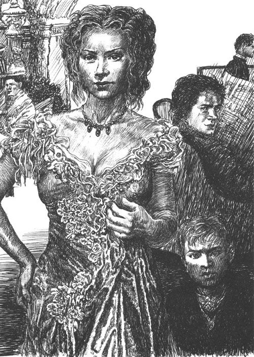

火车头嘶哑地鸣叫着，塞默林到了。黑色的列车在山上的银色灯光下停了一分钟，“扔出”又“吞进”了各式各样的人。恼人的噪声到处都是。接着，前面的机车又开始撕心裂肺地鸣叫起来，扯动着黑色的链子，向隧道的洞口冲去。广阔的景色在被清新、湿润的风吹拂过后，又展现出来。
下来的人中有一位年轻人。他考究的穿着和充满活力的步伐，十分博人好感。他迅速冲到人前，拦了一辆去旅店的马车。马儿不慌不忙地爬着坡。空气中有着春天的味道，只有那五六月份才不安地浮动在天空的云，像躁动不安的年轻人，在蓝天中奔跑、嬉戏，时而突然躲到山后去，时而相互拥抱后又再次分开；时而像揉成一团的白色纸巾，时而又被撕成了碎条。最后它们像是恶作剧似的给山头戴上一顶白帽子。高空中的风也不安分，它奋力地摇晃着那些细长的、沐雨的树木，使得它们飒飒作响，飞落下无数水珠。有时，那带着寒气的雪的芳香似乎也飘了过来。人们能感觉到，呼吸中有一种又甜又苦的味道。空中的、地上的……一切都是躁动不安的。马儿轻轻地喘息，沿着下坡路行进，小铃铛在它脖子上叮当作响。
一到酒店，年轻人就来到前台。他迅速地浏览了一遍旅客名单，但立即就失望了。“我究竟为什么要来这儿？”他开始不安地问自己，“光是独自来山上就已经比呆在办公室还烦了。很显然我要么来得太早了，要么就是太晚了。假期中的我总是这么倒霉。旅客名单上没一个认识的人。哪怕有几个女人在这儿也好，来几次小小的、必要时还能真挚地付出的调情，这样这周过得也不会那么凄凉。”这位年轻人是位男爵，出身于一个并不显赫的奥地利官家贵族，任职于总督府。他并不是十分需要这个假期，只是他其他的同事都休过一个星期的春假，他不想把自己的假期送给工作。他虽然不缺乏才干，又是一个懂得人情世故的人，在各个圈子里都左右逢源，但是他对孤独却是无可奈何的。他不喜欢独处，也尽量避免一个人待着，因为他根本不愿意静下心来审视自己。他知道，他需要人性的摩擦，来点燃他所有的才华、内心的热情和恣意。他孤身一人时是冷冰的，没有用处的，就好比躺在盒子里的火柴一样。
他沮丧地在空荡荡的大厅中踱来踱去，毫无目的地翻着报纸，还到音乐间弹了几首华尔兹舞曲，只不过旋律总是不大对。最后他烦躁地坐下，看着窗外的夜幕徐徐降临。灰色的雾霭犹如蒸汽，从杉树丛中渐渐升起。他就这样百无聊赖、心烦意乱地耗了一个小时，然后就“逃”往了餐厅。
那里只有几张桌子坐了人，他向他们匆匆一瞥。白费力气！没有人——除了一个教练，还有个在环形大道上见过的人——冲他打招呼。没有任何熟悉的面孔，没有一个女性，没有一个能让他“触电”的人。他越来越焦躁不安。他是属于这样一类的年轻人：他们的相貌总是能够给予他们成功。他们时刻准备着，去遇见、去经历那些刺激的新鲜事物。他们涌向充满未知的冒险，没有什么能吓到他们，因为他们认为自己已经预料到了所有的一切。他们不会错过任何情色之事，因为他们对女人的第一瞥目光就是充满情欲的打量。他们不管这女人是否是他们朋友的妻子，还是为他们开门的女仆。
如果人们略带鄙夷地称呼他们为“女人猎手”，似乎没有意识到这个字眼中蕴涵着多少观察得来的真理。然而事实就是，狩猎者的所有本能——追踪、兴奋、内心的残忍，都在这些人身上闪着光。他们坚守一个信念，时刻准备，行事果断，追寻着自己的艳遇。他们总是充满激情，但不是爱的激情，而是冷血、算计、危险地游戏人间的激情。他们之中有的是固执的人，不仅如此，还把整个人生变成了期待用机缘来穷尽的冒险。他们把一天分成数百次官能享受——短暂的一瞥、瞬逝的一笑、对坐时膝盖的轻轻一碰……又把一年分成数百天，因此官能享受就成了永不间断的、滋养人的、充满刺激的生活的源泉。
然而在这里，却没有可以调情的对象，猎手马上就气馁了。就好像一个赌徒手中握着牌，信心满满地坐在绿色赌桌旁，却没有等到一个对手。男爵要了一份报纸，闷闷不乐地扫着一行行的字，脑子却是麻木的，就像是醉酒的人，在文字中踉跄而行。
突然，他听到身后衣服的窸窣声还有略带怒气的装腔作势：“Mais tais – toi donc（法语：闭嘴），埃德加！”
一个穿着丝绸衣服的女人走过他的身旁，衣服沙沙作响，投下了一个高大丰腴的身影。在她身后跟着一个穿着黑丝绒上装的小男孩，他好奇地扫了他一眼。这两人坐到对面预订的桌边。很显然，这个孩子想竭力举止得当，但是从他不安的眼神中又看得出他做不到。这位夫人——年轻的男爵只关心她——穿着考究、优雅。他十分喜爱这个略微丰满的中年犹太女人。她充满激情，却又善于将自己的激情隐藏在高雅的忧郁之后。他还不敢马上直视她的眼睛，唯有欣赏她那两道美丽的弯眉，那柔软的、暴露了她的种族的弧形鼻子。她高贵的体态使得她充满魅力。她的秀发如同她丰满的身体上具有的一切女性特质一样，浓密而不夸张。她轻声点着菜，教训着那个把叉子玩得叮当响的孩子——她做这一切的时候，虽然装作漫不经心，却又小心翼翼地看了男爵一眼。而正是他对她的目不转睛才使得她如此小心拘谨。
男爵脸上的阴沉一下子烟消云散。他变得容光焕发，眉间的皱纹平整了，肌肉收紧了，身材也好像一下子魁梧了起来，眼睛都亮了。她也与那些需要男人在场才能唤醒自己魅力的女人没什么两样，情欲才能激发她的力量。他内心的猎手嗅到了猎物的味道，他的眼睛挑战似的搜寻着她的目光，企图来个邂逅，但她的目光却充满忧郁，有时与他的目光相遇，却不给出明确的答案。她偶尔也会莞尔一笑，可是笑容模棱两可。但正是这种似有似无的神态诱惑着他。唯一使他看到希望的是她不停的扫视，这既是反抗又是拘束。她同孩子谈话时显得格外谨慎，显然是做给外人看的。他觉得，就是这种故作镇定才表示着她内心的不安分。他激动了：游戏已经开始了！他延长了他的晚餐，紧紧地盯着这个女人足有半个钟头，直到他可以默念出她脸上的每一根线条，能够无形地触碰到她丰满身体的每一处。外面突然暗了下来，乌云将灰色的双手伸向树林，树林就像是孩子般害怕地哭泣起来。屋内的阴影越来越浓，沉默让屋里的人无比压抑。他感到寂静中母子的谈话越来越勉强，越来越做作，他觉得，这个对话要结束了。于是他决定放手一试。他第一个站起来，看着她身旁的景色，慢慢走向门口。在门口，他像是忘拿了什么东西似的，突然转过头，刚好碰到她那殷切地望着他的眼神。

突然，他听到身后衣服的窸窣声。
这眼神使他振奋。他在前厅焦躁兴奋地等候。不久后她就来了，牵着那个男孩，路过时还翻了几本杂志，给小孩子看了几张图。但是，当男爵佯装偶然走到桌旁找本杂志——实际上是为了进一步看她那温润的眼眸，甚至找机会搭讪——的时候，她却转过身子，轻轻拍她儿子的肩膀，说道：“Viens，Edgar！Au lit！（走吧，埃德加！该睡了！）”然后就冷冷地从他身旁走过。男爵原本还想与她结识，但是这样不友好的态度令他失望。但另一方面这种抗拒却越发诱惑着他，无论如何，他找到了伙伴，游戏可以开始了。
第二天早上，男爵走进大厅，看到昨天那个美丽陌生人的儿子和两个电梯工聊得正热，孩子正给他们看卡尔·梅书中的插画。他妈妈没在，显然还在梳洗打扮。现在，男爵才开始仔细打量这个男孩。这是个害羞的男孩，还没怎么发育，有点儿神经质，大约十二岁的样子，多动，目光投向各处。像这个年纪的其他孩子那样，他有着一种不安的表情，好像是刚被叫醒后突然被置于陌生的环境似的。他的面孔不难看，但还没有定型，男子的阳刚之气与孩童的稚气才开始在他体内斗争，一切都还在塑造之中，线条轮廓还不明显，只是模糊地挤在一起。此外他正处于尴尬的年龄，衣服都不大合身，袖子和裤腿松垮地围着他的小胳膊和小腿晃着，它们也没什么装饰，不怎么讲究。
孩子在这里晃来晃去，一副可怜巴巴的样子。其实他在这儿十分碍事。一会儿，被他各种问题折磨的门卫把这个孩子推到一边；一会儿，这孩子又挡住了大门。显然他缺少友好的玩伴。所以他就找旅馆的服务人员聊天，如果他们正好有时间，就会回他的话，但要是来人了或者有什么别的急事，谈话便会立即中断。男爵含着笑，带着兴致看着这个倒霉的小家伙。他正好奇地打量着周围的一切，周遭却都不友好地逃避他。有一次，男爵抓住了这好奇的目光，但是那双黑眼睛一发现自己被察觉，立即害羞地收了回去，躲在下垂的眼帘后面。男爵觉得这很有意思。这个小男孩让他产生了兴趣。他思忖，这个胆怯而害羞的孩子是否可以成为他接近那个女人最快的媒介呢？无论如何，他要试一试。孩子又跑到门外去，他悄悄地跟着他。孩子温柔地抚摸着白马的粉色鼻头，但是他真的不走运，马车夫粗鲁地把他赶走了。他委屈又无聊地晃来晃去，眼神空虚而悲伤。这时候男爵开始和他说话了。
“嘿，小家伙，喜欢这儿吗？”他突然说道，尽量显得平易近人。
孩子两颊绯红，怯懦地往上看。他害怕得手紧贴着腿，难为情地转来转去。这是第一次有陌生人主动跟他说话。
“谢谢，很喜欢。”他结巴地吐出这么一句。最后一个单词好像被咽了回去了似的。
“我倒是觉得很奇怪，”男爵笑着说，“这本是一个无聊的地方，尤其是对于像你这样的年轻人。你整天都干些什么啊？”
这个孩子还没反应过来，不能马上作答。这是真的吗？一个陌生的叔叔要跟他——一个其他人懒得理的家伙说话？这种想法令他又害羞又自豪。他努力鼓起勇气。
“我读书，然后我们散步，有时我们也坐车。我说的是我和妈妈。我要在这里休养，我生病了。医生说，我必须经常晒太阳。”
说最后几句话的时候，他已经相当镇定了。孩子们总是为自己的病痛自豪，因为他们知道，危险会让家人对他们加倍呵护。
“是啊，阳光有益于你这样的年轻人，它肯定会把你的皮肤晒得黝黑。但是你也不能整天晒太阳。像你这样的年轻人应该到处跑跑，纵情恣意，做点儿蠢事。我觉得你太乖了，看起来像个抱着本书宅在家里的书呆子。我还记得我在你这个年纪时是个怎样的调皮鬼，每晚回家时我的裤子都是破的。别太老实了！”
孩子不禁笑了，也消融了他之前的畏惧。他本来想说些什么，但是他觉得这样的话在这位如此友善的先生面前显得太放肆了。他从来不抢话插嘴，而且总是显得难为情。出于幸福和羞怯，他现在非常不知所措。他很想继续这次对话，可是却什么话也说不出来。幸好酒店那只大黄犬刚好经过，嗅了嗅他们俩，并乖巧地让人抚摸。
“你喜欢狗吗？”男爵问道。
“是啊，非常喜欢。我的祖母在巴登的别墅养了一只。我们住在那儿的时候，它天天跟着我的。但是我们只是夏天过去玩。”
“我想，在我家的庄园里得有二十几只吧。如果你在这儿乖乖的，我就送你一只，棕毛白耳朵。你想要吗？”
孩子高兴得脸都红了。
“想要想要！”
这句话脱口而出，热切而贪婪。但是他马上又吞吞吐吐、胆怯起来，好像被吓着似的说出了他的担忧。
“但是妈妈肯定不让。她说她受不了家里养狗。它们太吵了。”
男爵笑了笑。话题终于到母亲那儿了。
“妈妈这么严格啊？”
孩子想了想，注视了他片刻，思考他是否可以信任这个陌生人。他谨慎地回答：“不，妈妈不严格。因为我现在病了，我干什么她都同意。没准儿她也会同意我养狗。”
“要我去求她吗？”
“好啊，请您帮我说说吧，”孩子高兴地说，“那样妈妈一定会同意的。那只狗是什么样子的啊？是有白色的耳朵吗？它会把猎物叼回来吗？”
“会，它什么都会。”男爵看到孩童眼中迅速燃起的光芒，会心一笑。开始时的拘谨，还有因怯懦而隐藏的激情一下子喷发出来。原来的那个腼腆的孩子瞬间变成了一个淘气顽皮的家伙。
“要是他母亲也这样就好了。”男爵不自觉地想，他也是在小心背后藏着火热的激情。孩子一下子提出了无数个问题问他。“那只狗叫什么名字？”
“卡罗。”
“卡罗！”孩子兴奋地重复。想必他说的每句话都会令他兴高采烈，他被这突如其来的友谊陶醉了。男爵很吃惊，决定趁热打铁。他邀请这个小家伙和他一起散步。这个可怜的孩子，数周来一直渴望有人陪他，更是对这个提议欣喜若狂。对男爵“不经意”间提出的问题，这个孩子毫无顾虑地什么都说出来。不久男爵就对这家人了如指掌，尤其知道了埃德加是维也纳某律师的独生子，出身一个富裕的犹太资产阶级家庭。通过巧妙的提问，他打听到，孩子的母亲对塞默林之旅毫无兴趣，而且抱怨过没有合适的伙伴。他甚至觉得，从埃德加支支吾吾回答妈妈是否喜欢爸爸的问题可以看出，他们之间的关系并不好。他对自己的行为近乎感到惭愧——这么轻而易举地从一个天真无邪的孩子那里套出家庭秘密，只因为埃德加对自己能跟他说话而十分自豪。他完全信任他的新朋友。男爵边走边搂着他。和一个成年人可以如此亲密，这孩子的心因自豪而怦怦直跳。逐渐地，他忘记了自己是个孩子，无拘无束地像跟同龄人交谈似的侃侃而谈。
通过对话可以看出埃德加很聪明。和其他体弱多病的孩子一样，由于长时间和大人在一起而略显早熟。他们总是对钦慕或者含敌意的人或事过度激动，对任何事情都无法心平气和。对于谈到的人和事，他们不是陶醉就是仇恨，有时候这仇恨甚至会使他们面部扭曲，变得残暴、丑陋。或许是因为生了病，他的话语粗野、激烈、如火般炽热，看来，他的笨拙只是因为极力压制内心的激情的缘故。
男爵轻而易举地博得了他的信任。仅仅半小时，他就抓住了这颗火热且不安的心。欺骗这些天真无邪的孩子，获得他们的爱，真是件容易的事。他只要忘记自己是谁，谈话就能变得自然，让孩子觉得他是伙伴，消除距离感。他发自内心地高兴，能在这个孤独的地方突然结识一个朋友，而且还是那么好的朋友！他们两个都忘记了自己的身份，忘记了孩子细嫩的声音和幼稚的话语，他们的形象在这一刻也被冲刷掉了。他的激情全部属于他的新朋友、大朋友，当这个大朋友告别，邀请他明天上午再来的时候，他的心也自豪得膨胀了。这个新朋友从远处向他招手挥别，像个哥哥一般。这一刻，或许是他生命中最绚烂的时刻。欺骗孩子是如此之容易，男爵向这个跑开的孩子微笑着。现在有中介人了，孩子一定会把今天的事讲给他母亲听，一字一句地重复，直到母亲视之为煎熬。这时他怡然地想到，他是如何巧妙地说着奉承话，例如他一直称呼埃德加的妈妈为“漂亮的妈妈”。他确信这个孩子不把他和他妈妈凑到一起是不会罢休的。他现在只需动下手指便可缩短他和那个美丽的陌生人的距离。现在他可以平静地做梦，欣赏风景，因为他知道，一双温暖的小手为他建筑了一座通往她内心的桥梁。
几个小时后发生的事验证了他的计划是出色的，每一个细节都取得了成功。男爵故意迟些到餐厅，只见埃德加从沙发上一跃而起，开心激动地向他打招呼致意。与此同时，他扯着母亲的袖子，激动慌张地跟她说话，指着男爵。她对孩子的行为感到羞愧、紧张，但不得不为了满足孩子的意愿往这个方向看。男爵趁机恭敬地鞠了一躬，这样就算认识了。她回礼，但此后一直低头吃饭，避免往那边看。埃德加可不这样，他不停地往这边看，有一次甚至想到这边说话，但这种放肆的行为马上被妈妈严厉地批评了。吃完饭他就该睡觉了。他和妈妈悄声说了一堆话，他的热烈请求终于得到了批准，他可以到另一张桌子去问候。男爵对他说了几句贴心话，又使孩子眼中泛起光芒。他和这个孩子聊了几分钟，突然巧妙地话锋一转，转身到另一张桌子去，祝贺那位不知所措的邻座有这么个聪明伶俐的孩子，说他上午和她儿子过得很愉快。埃德加就站在旁边，出于高兴与自豪而脸红。他又问起孩子的健康状况，如此详尽具体的问题，迫使母亲必须回答。
这样他们的对话不可遏制地延长了，这令这个孩子很开心，他带着敬畏倾听着。男爵做了自我介绍，并相信他那响亮的名字会给这位爱慕虚荣的女士留下印象。总之，她对他彬彬有礼，未失体面，甚至先提出告别。她抱歉地说是孩子的缘故。
孩子激烈地反对，说他不累，还说愿意通宵不睡。但是母亲已经把手伸出给男爵，他尊敬地吻了吻它。
埃德加这晚睡得很不好。他心里一团糟，既有兴奋又有幼稚的绝望。因为今天在他身上发生了件新鲜事。他头一次进入了成人的世界。半梦半醒中，他忘记了自己是孩子，觉得自己瞬间就长大了。因为他孤单的童年，加上长期生病，他至今没有几个朋友。他的温暖和爱抚都是来自父母的（但是他们却很少理他），其他的只有来自仆人。爱的力量，如果只是依据它的源头而不是它产生的张力，不是依据它空洞黑暗的空间（这空间曾充满失望和寂寞）来判断，就必定会出错。一种超重的、还未曾有过的感觉已经在期待，它现在张开双臂，拥抱第一个迎向它的人，一个能战胜它的人。埃德加在黑暗中躺着，快乐着，又疑惑着，他想笑又想哭。因为他爱这个人，他还从未这样爱过谁。他不爱他的父母，甚至连上帝都不爱。他那幼稚的激情，现在拥抱着这个人，这个两小时前连名字都不知道的人。
他确实很聪明，不会因为这突然的、独特的友谊而感到窘迫。但使他十分不安的是自己的微不足道。“我，这个十二岁的小孩子，还要上学，晚上还要别人打发去睡觉，配得上做他的朋友吗？”他折磨着自己。“我能为他做什么？我能给他什么？”正是因为他无法为他做什么才让他苦恼。平常，他要是喜欢上哪个同学，首先会把他桌上的珍贵玩意儿，如邮票、石头之类的孩子们的财产和那个同学分享。但是这些他昨日还视为珍宝的东西，突然变得一文不值了。因为他怎么能给那个新朋友这些东西呢？那个他还不敢用“你”称呼的朋友。怎样才能向他表达自己的感受呢？他觉得自己愈发矮小、不成熟，这些想法不停地折磨着他。这个十二岁的孩子还未曾如此咒骂过自己呢，他从未如此殷切地希望自己长成梦想的那样：高大强壮的男子汉，像其他人一样的大人。
这些不安的念头很快就编织了关于五彩缤纷的成人世界的美梦。埃德加终于带着微笑入睡了，但是他一直想着明天的约会，所以睡得很不踏实。他七点就醒了，害怕迟到了。
他急匆匆地穿上衣服，问候吃了一惊的母亲。通常情况下都是她把他从床上费劲地叫起来的。还没等她问什么，他就冲下楼了。他一直不耐烦地晃荡到九点，忘记了要吃早餐，生怕让那个一起去散步的朋友久等。
九点半，男爵终于慢慢悠悠地来了。他当然早就忘了这个约定。但是这个孩子殷切地跑向他，他不得不对此报以微笑，并遵守他的承诺。他又搂着小家伙，带着这个神采奕奕的孩子走上走下，只是委婉而坚决地拒绝现在就去散步。他看起来像在等待着什么，至少他紧张地扫视大门就说明了这点。他突然振奋了——埃德加的妈妈来了，友好地问候他们俩。当她知道埃德加视之为珍贵秘密的一起散步的计划时，微笑着同意了，并爽快地答应了男爵同去的邀请。
埃德加立马就不高兴了，咬着他的嘴唇。真讨厌！怎么她就这个时候过来了。散步本来只属于他们俩的。尽管是他把妈妈介绍给他的朋友的，但那也不过是客气而已，这不表明他想和妈妈一起分享这个朋友。当他看到男爵对母亲的那种殷勤，心中就有了醋意。
于是他们三人一起散步。因为他们两人都透露出对孩子的关心，孩子心中更滋长出自负的感觉。埃德加几乎是对话的唯一主题。母亲佯装忧心他的惨白面色和神经质，男爵却又微笑着反对这种看法，还赞许他的“朋友”——他是这么称呼他的。这是埃德加最美好的时光。他拥有了他童年没有过的权力。他可以参与他们的聊天，不会被要求闭嘴，甚至可以提各种荒唐的要求。要是放在以前，他会立刻被臭骂一顿。难怪他觉得自己已经长大了——这种虚假的感觉在他的内心滋生。在他的白日梦里，童年已经被远远地抛在后面，就像扔掉一件不合身的衣服一样。
中午，男爵受埃德加母亲的邀请，和他们同桌。他们面对面坐在一起，变成了朋友。三重唱开始进行，女声、男声、童声三种声音和谐地响起。
看来现在是时候让这个猎人小心地靠近猎物了。男爵不喜欢这种如家庭般的三重唱。三个人聊天还不错，但是，闲聊归根结底不是他的目的。他知道，男女之间的情欲如果成了假面游戏的社交，会妨碍他们。言语如果失去了热度，会使进攻失去火力。他可不会忘记这次对话的初衷。他确信，他的本意她早已心知肚明。
他对这个女人的努力不是白费的，成功的几率很大。她正处在一个关键时期，这个时期的女人开始后悔忠于自己从来不爱的男人，自己的美貌也开始消逝，需要在母性和女人之间做最后一次刻不容缓的选择。似乎早就有了答案的生活，此刻再一次成为了疑问，最后一次，意志的磁针在性欲和彻底断念之间颤动。一个女人面临着一个危险的抉择，是过自己的生活，还是为孩子而活，是做女人还是做母亲。男爵一目了然，已经察觉到了她的动摇。对话中，她总是忘记提起她的丈夫，对自己的孩子显然也了解不多。她的眼中透着百无聊赖，伤感中透露出她正掩饰着的情欲。
男爵决定马上出击，但又要避免显得迫不及待。相反，像垂钓者引诱式地收竿那样，他故作冷淡，虽然是他追求别人，却想让别人先来追他。他决定表现得高傲，强调自己与众不同的社会地位。他想通过突出自己的外表、有声望的贵族姓氏以及冷淡的态度来抱得这个丰满美丽的美人。这种想法让他蠢蠢欲动。
这场游戏已经开始令他兴奋，他强迫自己要小心翼翼。一下午他都待在自己的房间，愉快地幻想着她正在找他、想他。但是，他的缺席没有引起她的注意，原本她就是想避开他的。这使孩子难受极了，埃德加整个下午都觉得无助、迷惘。他带着幼稚的忠诚等了他的朋友好几个小时。离开或者独自做什么，对他来说都是对友谊的背叛。他六神无主地在过道里踱来踱去，天色越黑，他心中越是难受。他焦躁不安、想入非非，他梦到了一次事故，梦到自己受到了侮辱，因为不耐烦和畏惧，他差点儿哭了出来。
男爵晚上去吃饭的时候，受到了热烈的欢迎。埃德加不顾母亲的告诫，不理会旁人惊讶的目光，跳了起来冲向他，用他瘦弱的双臂紧紧地抱住他。
“您去哪儿了？您到哪儿去了？”他急促地喊道，“我们到处找您。”这个不情愿的拉关系，使得母亲脸都红了，她相当严厉地说道：“Sois sage，Edgar，Assieds toi！（听话，埃德加，坐下！）”（她是总跟他说法语的，尽管她的法语并不自如，碰到复杂的表达会感到吃力。）埃德加听从了，但仍不放弃对男爵的刨根问底。“别忘了，男爵可以做他想做的事。没准我们的陪伴使他无聊了。”这回她把自己扯进去了，男爵欣喜地把这种责备当做恭维。
他身体内的猎人兴奋起来了。他非常喜悦、激动。能如此迅速地找到猎物，而且他感到它就在自己的射程范围之内了。他眼睛发亮，热血沸腾，口若悬河，他自己也不明白这是为什么。同其他性欲旺盛的人一样，当他知道自己已经讨得女人欢心时，便加倍自如，加倍洒脱，就像是一些演员那样，面对观众时干劲倍增。他一直就是个吹牛的高手，今天，他喝了几杯为了“友谊”而点的香槟，便讲得更为精彩了。他说他和一位地位很高的英国贵族客人在印度打过猎。这是个聪明的话题，因为这个题材是轻松的，而且他感觉到，这些异域风情和不可触及的事物会激起女人的兴趣。最被这个故事迷住的还是埃德加，他的眼中放着光。他忘了吃饭，盯着讲故事的人，看着字句从他口中一个个蹦出。他从未想过真的能见到这样一个人，经历过那些他在书上才能够读到的冒险，什么猎虎啊，印度人啊，还有能把千万人埋葬的、可怕的转轮王的轮子。至今他都没想到，真的有这样的人存在，就像他不相信童话世界那样。此刻，他的心里第一次涌现出一种神奇的感觉。他目不转睛，屏住呼吸盯着他朋友的那双手，那双曾经打过虎的双手。他不敢问什么，但他之后说话的声音却异常兴奋。他想象自己身临讲述的故事中：他看见他朋友高高地骑在一头身着紫衣的大象上，左右两旁有戴头巾的棕色人侍候。突然，一只呲牙咧嘴的老虎从丛林中跳出，伸着前爪去抓大象的鼻子……现在男爵开始讲更有意思的事情——怎样巧妙地抓住大象：用驯服的、衰老的动物把气盛的、狂野的、傲慢的大象引进笼子里。孩子的眼中射出了火热的光芒。这时候，妈妈突然跟她说：“九点了，该睡觉了！”这像一把闪着光的刺刀，突然落了下来。
埃德加惊吓得脸色煞白。对于所有孩子来说，“赶紧上床去”是很可怕的一句话，因为这是大人在别人面前公然藐视他们的体现。这是一种自我招供，是孩子的标记，是年幼的象征，是嗜睡的表现。可是这种羞辱却在这个节骨眼上发生了，他不得不推迟听这些闻所未闻的事情。
“就听完这一个吧，妈妈，就这个大象的，就让我听听吧！”
他开始乞求了，但立即想到了他做为成年人的尊严。他只敢再试一次。但是他母亲今天特别严厉：“不，已经太晚了。赶紧上去！要听话，埃德加。我会给你一字一句地再把男爵先生的故事讲一遍。”
埃德加犹豫着。平时都是妈妈带他去睡觉。但是他也不想当着朋友的面乞求。他幼稚的骄傲让他至少做出自愿离开的样子。
“妈妈，你真得给我讲所有的事啊！所有的！大象的故事，还有其他的！”
“好的，孩子。”
“马上，今天就得讲！”
“好的，好的，但是现在你要睡觉去。快去！”埃德加自己也奇怪，他把手递给男爵和妈妈的时候，虽然呜咽了，但是没有脸红。男爵亲切地摸了摸孩子的密发，这使孩子紧绷的脸上又挤出了笑容。接着他必须迅速跑到门口了，不然他们就会看到他大大的泪珠顺着脸颊流下来了。
母亲在桌旁和男爵多待了一会儿，但是他们没有再谈大象和狩猎了。孩子离开后，谈话有点儿压抑，有点儿尴尬。最后他们回到前厅，坐在一个角落，男爵前所未有地神采飞扬。几杯香槟过后，她自己也开始激动起来，谈话马上变得有些危险。男爵其实并不算帅，他只是很年轻，他的深棕色、精力旺盛的脸和他的短发让他看起来非常阳刚。他灵活、近乎调皮的动作撩动了她的心。她现在喜欢从近处看他，也不再畏惧他的目光。逐渐地，谈话之中有了一种令她困惑的放肆，有种东西抚摸着她的身体，又迅速移开，令她的双颊绯红。随后他轻松地一笑，无拘无束、如孩子般，好像他追求的都是孩子的玩笑。有时她觉得她应该对他说些严厉的话。但是她天生喜爱卖弄风骚，这些话撩拨得她心痒难忍，只想期待更多。这种放肆的游戏让她着迷，最后她甚至试着模仿他。她暗送秋波，言语暧昧，甚至允许他靠得如此之近，使自己能够听到他的呼吸正暖暖地吹在肩头。就像所有赌徒一样，他们忘记了时间，陶醉在这火热的对话之中。午夜前厅熄灯之时，他们才吃了一惊。
她暗送秋波，言语暧昧，甚至允许他靠得如此之近，使自己能够听到他的呼吸正暖暖地吹在肩头。
他们猛然一起，立刻觉得自己太放肆了。她本来也很会玩火，但是现在她本能地感觉到，火已经烧到她身上了。她颤抖地发现，自己再也把持不住自己了，内心已经有什么东西开始蔓延。恐惧、红酒、情话在她脑海中回旋，一种莫名的、无意义的恐惧袭击了她。这种恐惧她曾经经历过数次，却从未如此眩晕、猛烈。“晚安，晚安。明早见。”她急匆匆地说，然后准备跑掉。这倒不是为了逃离他，而是为了逃离此刻这种恐惧，这种新奇而陌生的、无法把持自己的窘境。男爵却轻握着她那只告别的手，吻着它，并不是那种通常的礼到为止，而是四五次的深吻，嘴唇从指间滑到手腕。她感到他硬硬的胡须在她手背上痒痒的，她颤抖了。某种温暖的、不安的感觉从手背流向全身。恐惧袭来，她捶打着太阳穴，头脑发热。恐惧，莫名的恐惧，使她全身颤抖，她迅速从他手中抽回自己的手。
“您再待会儿吧。”男爵悄声说道。可是她却突然仓皇逃走了，她的恐惧与迷惑一目了然。她现在很兴奋，这正是男爵的目的。她感觉到自己现在已经一片混乱了。残酷的灼人的眼光追随着她，她身后的男人要追捕她，得到她。还在逃跑时，她就开始为他没有这么做感到遗憾。多年来她所期待的事情，本来此刻可以实现。每次经历这种冒险，她总能在最后一刻逃开，但是他的气息令她如此痴迷，这次巨大的危险不是短暂的调情。可是男爵此刻正过分自豪，没有趁机去追她。他对这次胜利充满信心，不想在这个女人醉意正浓、不能把持自己的时候把她弄到手；相反，神志清醒时的斗争和委身才能让这个赌徒兴奋。她逃不出他的掌心。他看到，火热的毒药已经在她的血管中蔓延。
她在楼梯上停住了脚步，手压在气喘吁吁的胸口。她必须平静一分钟。她的神经已经支撑不住了。她发出一声叹息，半是庆幸自己逃脱危险，半是遗憾。但是一切都是一团糟，令人头晕目眩。她半闭着眼，像是醉鬼一样，摸索向她的房门，深吸一口气。她终于摸到了把手，现在她总算感觉安全了！
她轻轻推门进房，但马上就吓了回来——有什么东西在房间里动了一下，在里面的暗处。她兴奋的神经又开始剧烈颤动起来，她想求助了，这时房里传出轻轻的、半睡半醒的声音：“是你吗，妈妈？”
“天啊，你在那儿干吗？”她直奔沙发，埃德加在上面缩成一团，刚刚醒来。她的第一个念头就是这个孩子生病了，要么就是需要帮助。
但是埃德加带着睡意，还有些小小的谴责说：“我等你好久了，不知不觉就睡着了。”
“为什么呢？”
“大象啊。”
“什么大象？”
现在她知道了。她向孩子保证了，今天就把狩猎和冒险故事都告诉他，因此孩子才溜到她的房间等。这单纯、幼稚的孩子，深信不疑地等着她来，慢慢地就睡着了。这种放肆的举动惹恼了她。其实她是在气自己，她想大喊大叫，掩饰自己的罪过和羞愧。“马上去床上睡，你这没教养的野孩子！”她生气地冲他嚷道。埃德加吃惊地望着她。她为什么这么生他的气？他什么也没干啊！埃德加走了，什么也没说。他本来就已经很累，睡意朦胧。他迟钝地感觉到，母亲没有遵守诺言，这样对他不公平。但是他没有反抗，他累得麻木了。他很生气自己在这儿睡着了，而不是醒着等妈妈。
“完全是个小孩子。”当他再次入睡时，他生气地对自己说。
因为从昨天开始，他开始恨自己是个孩子。
男爵睡得很不好。在一次中断的调情后去睡觉总是危险的：一个不安的、噩梦频生的夜晚让他不久之后就后悔没有抓住那一分钟。当他早上昏昏沉沉、情绪不佳地走下楼时，孩子从藏着的地方突然跳了出来，投入他的怀抱，用各种问题折磨他。他很开心，这一分钟朋友再次独属于他，不用和妈妈分享他。他的故事只能讲给他听，而不再给妈妈讲了。他接着提了很多问题，因为妈妈虽然保证了，但还是没有将那些惊奇的事情讲给他听。埃德加把无数幼稚的问题倾泻给他，这使男爵心情更加不快。这些问题中还掺杂着各种亲密的举动——孩子终于再次和这个他找了好久、等了一早上的朋友见面了，他很高兴。
男爵敷衍地回答着。这孩子没完没了的伏击等待，数不尽的幼稚问题，以及他那讨人嫌的激情，开始让他厌烦。天天同一个十二岁的孩子到处乱转，谈些废话，使他疲倦。现在他只想着如何趁热打铁，把他母亲弄到手。当然这个孩子的存在也就成了障碍。因为自己的不小心，唤起了孩子对自己的依恋，他对此感到不快，因为他暂时无法摆脱这过分亲密的朋友。
无论如何还是得试试。一直到十点钟——和孩子母亲约好的散步时间，他都心不在焉地听着孩子的话，偶尔插上一两句，以免冒犯了孩子，同时还翻着报纸。
当表快指到十点的时候，他像是突然想起来什么似的，请求埃德加去另一家旅馆一趟，问问他表兄格伦特海姆伯爵是不是到了。
这个天真的孩子特别高兴，他终于可以为他朋友做点儿什么了。他对自己使者的身份感到自豪，马上奔了出去。周围的人都奇怪地看着他的背影。对于他来说，这是一个展示他办事牢靠的机会。
那儿的人说，伯爵还没有到，现在压根儿还没有登记。
他带着这个消息又冲了回来。但是男爵已经不在前厅了。于是他去敲他的房门，仍旧无济于事！他不安地跑遍了所有房间、音乐厅还有咖啡厅，着急地冲向妈妈，打听消息：但她也离开了。最后，他绝望地向门卫求助，门卫告诉他几小时前两个人就一起走了。听到这个消息后他吃了一惊。
埃德加耐心地等待着。他天真无邪，根本不会往坏的方面去想。他们可能就出去一会儿，他确定，因为男爵还等着他的回信呢。但是好几个小时都过去了，他开始不安起来。
自从这个陌生的、魅力十足的人进入这个幼小的、天真的生命之后，这个孩子每天都处于紧张、混乱和迷惑之中。任何一种剧烈的情感压在这么纤弱的身体上，都会像压在软蜡上一样，留下痕迹。他的眼皮又开始紧张地颤抖起来，脸色看起来更加苍白。埃德加等啊等，刚开始还有耐心，然后就开始焦躁，最终哭了出来。但是他还是没有起疑心。他盲目地信任这个完美的朋友，他猜是不是有什么误会让这种莫名的恐惧折磨着他，没准儿是他把他的托付理解错了。
他们终于回来了，愉快地聊着天，丝毫没有惊讶的神情，这真是奇怪。看来他们根本没把他放在心上。“我们迎你去了，希望能在路上碰到你，埃迪。”男爵说道，没有提到他托付的事情。他们怎么没有看到他？这个孩子很吃惊。他真的是沿着笔直的马路跑回来的，他想知道他们是去哪个方向找他的，但是妈妈打断了他：“好了！好了！孩子不要总这么絮絮叨叨的。”
埃德加气得满脸通红。这已经是妈妈第二次当着朋友的面贬低他了。她为什么要这么做，为什么总是把他当孩子？他确信他已经不再是孩子了。显然她嫉妒他有个朋友，并计划把他朋友抢过去。是的，她绝对是这样想的。肯定是她故意引男爵走错路的。但是他不能任由她欺负，他应该明白这一点。他要反抗她。埃德加决定今天吃饭时不跟她说话，只和他朋友说话。
但是这对他来说很难。他们并没有注意到他的报复，甚至连他进来都没有看到。是的，她甚至都没有看到他，昨天他可是他们的核心啊！他们两人谈笑风生，都不理睬他，似乎他已经沉到桌底。热血涌上双颊，他的喉咙像是塞了东西，让他窒息。他发抖地意识到自己的无力。难道他就要在这里静静地坐着，眼看着母亲抢走自己唯一所爱的朋友？难道除了沉默之外就没有别的办法了？他想，他必须站起来，用双拳突如其来地猛击。这样他们才能看见他。但是他忍住了，只是放下了刀叉，不再吃东西了。可是他们很久都没有发现他不吃东西。上到最后一道菜时，母亲才注意到他。她问他是不是哪里不舒服。“可恶，”他心想，“她只关心我是否生病，其他的事情毫不关心。”他简短地回答说他没有食欲。没什么能让他们注意他。男爵像是忘了他，都没跟他说一句话。他的眼眶越来越热，他必须趁别人注意到之前，赶紧拿起餐巾，防止幼稚的泪水从两颊流下来，润湿双唇。这顿饭结束时，他舒了一口气。
吃饭的时候，他母亲建议他一起坐车去拜访玛利亚·舒茨。埃德加听了，牙齿紧咬嘴唇。他一分钟都不想让他和她独处。她对他说：“埃德加，你把学的知识都快忘了，你应该在家待着复习！”这句话使他恨她到极点。他又一次握紧了他的小拳头。她总是要在他朋友面前羞辱他，总是想着他还是孩子，还得上学，只有得到允许才可以和大人在一起。这次，她的居心很明显了。他没有回答，而是转过身。
“啊，又不高兴了，”她笑着说，然后跟男爵说道：“让他学习一个小时真的对他这么不好么？”
“呵，一两个小时不会怎么样的。”这是男爵说的，这个自称他朋友的人，曾嘲笑他是书呆子，现在他却这么说，真是让他心寒。
这是默契吗？两个人真的联合起来对付他了吗？孩子的眼中燃烧着愤怒。“爸爸禁止我在这里学习，爸爸只是想让我在这儿疗养！”他把这句话抛了出来，带着对自己病痛的骄傲，绝望地搬出了父亲的话。父亲的威望，就像是威胁他们一样。最奇怪的是，这话真的让这两个人都不愉快。母亲把目光移开，手指紧张地敲着桌子。他们之间有一种尴尬的沉默。
“随便你吧，埃迪，”男爵强颜欢笑，“我又不必考试，我各科成绩早就不及格了。”
但是埃德加没有笑，只是用审视的、锐利的目光盯着他，好像要一眼看进他的灵魂似的。发生了什么？他们之间有什么发生了改变，但这个孩子并不知道具体是什么。为什么？他不安地移动着目光。一把小锤在他心里快速地敲着：这是他的第一次猜疑。
“她怎么变成这样了呢？”在辘辘前行的马车上，孩子坐在他们对面想着，“为什么他们不像以前那样对我？为什么妈妈一直躲避我看她的目光？为什么他总在我面前调侃、装疯卖傻？两个人都不再像昨天和前天那样跟我说话了，我觉得他们两个都换了一副面孔。妈妈今天嘴唇那么红，想必是涂了口红。我从没看到过她涂口红。而他今天总是皱着眉头，好像受了委屈似的。我又没对他做什么，没说过惹他们生气的话啊！不，绝对不是我的原因，才使他们之间的关系变得不一样的。他们好像有什么要说又不敢说的话似的。他们不再像昨天那样聊天，不再笑，他们变得拘谨了。他们隐藏了什么事情？他们之间肯定有什么秘密不想告诉我。无论如何，我一定要挖出这个秘密。我看出来了，一定是那个当着我的面要关门的秘密，像书上和戏剧里都说的，男人女人展开双臂高声而唱，相互拥抱又分开。肯定也和法语家教说的是一回事，他和爸爸相处得很不好，后来就被辞了。这些事情都是有联系的，我感觉到了，只是我不知道是怎么联系的。嗯，一定要搞清楚这个秘密，彻底搞清，要抓住这把能打开大门的钥匙，那样我就不再是孩子，不再让他们搪塞我、欺骗我。不只现在，永远都不让他们这么做！我要揭穿这个可怕的秘密！”他的额头上起了一道皱纹，这个瘦弱的十二岁孩子看起来老了许多。他是如此地冥思苦想，连风景都没有瞧上一眼。窗外色彩绚丽，针叶林为大山覆满纯净的绿色，山谷还沐浴在迟来的春天里。他只是不停地盯着坐在他对面的马车后座上的两个人，灼热的目光仿佛要从他们深邃的眼中钓出那个秘密似的。没什么比充满激情的怀疑更能刺激思考，没有什么比模糊的踪迹更能发展还未成熟的心智。有时只是一扇薄门，把孩子和我们称之为真实的世界分开，一阵风凑巧将这扇门吹开了。
埃德加还从未如此接近一个未知的事物。一个巨大的秘密，他觉得它就在眼前，虽然它还被锁着，没有被打开，但是已经很近了。很近了，这使他振奋。他突然变得严肃起来，似乎意识到自己已经不知不觉地在童年的边缘了。
对面的两个人感觉到了某种莫名的压力，但是又不知道压力来源于孩子。三人同车让他们感到很压抑，很不自在，在面对那双灼热的、让他们烦恼的眼睛时，他们不敢说话，不敢看他。他们之间再也回不到从前，可以轻松地交谈，甚至可以深入到语调亲昵、言语暧昧的阶段，他们也因此剧烈颤抖。他们的谈话经常进行不下去，经常说到一半，想继续说下去，却又不得不在孩子固执的沉默中无法进行。
对母亲来说，这固执的缄口不言是一大负担。她谨慎地从侧面打量他。当她看到这孩子咬嘴唇的神情时，突然第一次发现这个孩子的神情和她丈夫被激怒或者愤怒时的神情一样，这让她吓了一跳。正好在她有艳遇时想起了她的丈夫，让她很不舒服。这个孩子就像是个鬼魂，一个良心的卫士，在狭窄的马车上，在她对面半米的地方，用他深色的眼眸，在苍白的额头下窥视着他们俩，这使她的难受加倍。
此时，埃德加突然抬起头，看了他们一秒钟。两个人都垂下了眼睛：他们平生第一次感到自己受到暗中监视。之前，母子俩一直都无条件相互信任，但是现在母子之间——她和他之间突然发生了什么，让他们的关系变了。生平第一次，他们察觉到他们两个人已经分道扬镳、相互忌恨。这种恨刚刚产生，他们彼此都不敢承认。
当马车在旅店门口停下的时候，三个人都舒了一口气。这次出行很不愉快，每个人都感觉到了，却没有人敢说出来。
埃德加第一个跳下马车。他母亲借故头疼赶紧上楼了。她累了，想一个人静一静。埃德加和男爵留了下来。男爵付了车夫钱，看了看表，径直走向前厅，没有理会那个孩子。孩子望着男爵优雅、修长的背影和轻盈的步伐。它们吸引着这个孩子，昨天他还模仿来着呢。但是他走过去了，径直走过去了。显然他忘记了这个孩子，让他独自站在车夫和马旁边，好像这个孩子跟他毫不相关似的。
埃德加看着他就这么走了，好像被什么东西撕成了两半。尽管如此，他还是深爱着男爵。男爵就这么走了，没有用大衣碰他一下，没有跟这个无辜的孩子说一句话。他打从心底里绝望了。强装出来的镇定没有了，他又成了一个孩子，和昨天和以前一样的、渺小的、顺从的孩子。这违背了他的意愿。他颤抖着，快步跟上男爵，此时他正要上楼。孩子在他前面挡住他，强忍着泪水说道：“我做错什么了吗？您为什么不再理我？为什么您现在总是这么对我？为什么妈妈也是？为什么您总要推开我？我是个负担吗？还是我做错什么了？”
男爵吃了一惊。孩子的声音中有种令他迷惑的东西扰乱了他。他开始同情这个天真的孩子了。“埃迪，你真是个小笨蛋！我只是今天心情不好。你是个可爱的小家伙，我真的很喜欢你。”他摸了摸他的头，半转过脸，以免看到孩子那双大大的、湿润的、恳求的眼睛。
他演的戏开始让他尴尬了。他已经感到惭愧，觉得玩弄了这个孩子的感情。这单薄的、因抽泣而颤抖的声音让他心疼。“现在上去吧，埃迪，今天晚上大家就会和好如初的，你相信我。”他安抚道。
“但是您别让妈妈早早地让我上楼行吗？”
“好的，好的，埃迪，我不让她这么做，”男爵笑着说，“现在尽管上楼吧，我要去换晚餐的衣服了。”
埃德加走了，此刻他很开心。但是不久他内心的小锤又开始敲起来了。从昨天开始他忽然长大了好几岁，“怀疑”这个不速之客已经定居他的内心了。
他等着，这是很重要的考验。他们一起坐在桌旁。快九点了，妈妈还没有叫他去睡觉。他开始有点儿不安了。为什么今天她让他留这么久，而平常一到时间就得走？难道男爵把他们的对话告诉她了？突然间，他极其后悔，今天真不应该带着完全信任的心去找他！十点钟，他妈妈突然站起来和男爵道别。奇怪的是，男爵对她的提前离开没有感到惊讶，也没有像往常一样留住她。孩子胸中的小锤子敲击得越来越激烈。
这是个很严峻的考验。但是他装作一无所知，毫不反抗地跟着母亲到门边。走到那里时他突然用眼睛扫视，此时真的看见了她含笑的目光，正越过他的头顶投向男爵。这是默契，也是某个秘密。男爵出卖了他。今天早上说的那些话是为了安抚他，好让他明天不会妨碍到他们。
“坏蛋。”他咕哝道。
“你说什么？”母亲问道。
“没事。”他从牙缝中挤出这个词。他自己也有秘密，那就是恨，对他们两人无尽的恨。
埃德加的不安已经过去了。他终于有了明显的感觉：恨意和公开的敌对。
现在，他确信自己是他们的障碍，所以跟他们在一起就会给他带来一种残酷的、复杂的乐趣。他要破坏他们，要尽全力与他们敌对。他先是对男爵表示了他的愤怒。早晨，当他下楼从他旁边走过时，他真诚地问候：“你好，埃迪。”埃德加只是咕哝一声，生硬地回了一句：“早。”眼睛都没抬，只是靠在椅子上不动。
“妈妈下来了吗？”
埃德加看着报纸敷衍道：“我不知道。”
男爵惊讶了。这孩子突然怎么了？“你没睡好吗，埃迪？”一个玩笑总能帮着缓和气氛。但是埃德加还是鄙视地回了他一个“不”，接着又低头看报纸。“傻小子。”男爵嘟囔，耸耸肩，接着走开了。他也已经公开了他的敌意。
埃德加对妈妈也是十分冷淡。有次她让他去打网球，这样拙劣的借口，被他平静地拒绝了。出于恨而形成的冷笑从他的嘴唇发出来，他不要再被别人骗了。“我宁愿跟你去散步，妈妈。”他说话时带着装出来的亲切，盯着她的眼睛。这个回答对她来说显然不合时宜。她犹豫了一会儿，像是在找寻什么。最终她决定了：“在这儿等我。”然后去吃早餐了。
埃德加在等着，但心中一直翻腾着不信任感，不安地体会着他们每一句话中秘密、敌对的意图。这种猜疑使他具有一种出奇的洞察力。他没有在前厅等待，而是站到马路上。在那里不仅能监视前厅，还能监视每一道门。他的心中有种感觉，妈妈骗了他。这下他们跑不掉了。就像他读过的印第安人书籍那样，“躲在路旁的木料里”。半小时后，他果然看到妈妈从侧门出来，手里拿着一束漂亮的玫瑰花，后面跟着男爵，那个叛徒。
两个人看起来都很开心。他们躲开了他，就为了他们的秘密，他们现在可以舒一口气了吗？他们笑着、谈着，准备折向林间小路。
是时候了，埃德加慢悠悠地像是偶然来到这里似的，从木堆后面走了出来。他非常镇定地走向他们，以便留出充分的时间欣赏他们的惊讶。两个人都吃了一惊，交换了异样的目光。孩子慢慢地、平静地向他们走去，带着戏谑的目光盯着他们。“啊，是你呀，埃迪，我们在里面找你呢。”母亲终于开口了。“无耻的谎言。”孩子想着，但是嘴唇却一动不动，把仇恨这个秘密藏于牙齿后面。
三人踟蹰地站在那里，面面相觑。“我们走吧。”这个生气的女人沮丧地说道，揪下了一朵最美的玫瑰。她的鼻翼再次微微颤动，这意味着她愤怒了。埃德加还是站在那里，好像这事跟他没关系似的，看着天空。等到他们要走时，他还准备跟着他们。男爵又尝试了一次欺骗：“今天有网球联赛，你看吗？”埃德加只是鄙视地看了他一眼。他不理他了，撅起了嘴巴，像是要吹口哨似的——这就是他的答复。他闪亮的牙齿显示了他的仇恨。
孩子突然像个噩梦般侵袭着两人。罪犯在看守的后面，悄悄地握起了拳头。其实这个孩子什么也没做，可是他们俩却无法忍受他窥视而鄙夷的目光。孩子噙着愤怒的泪水，含着忧郁，对任何试图接近他的东西加以排斥。“走远点儿！”母亲突然愤怒地喊道，孩子的持续窃听使她感到不安，“别总在我面前晃来晃去，烦死人了！”埃德加顺从地离开了，但是走几步就回头，然后站着等，像条黑狗用那魔鬼般的目光，织成一张仇恨的火网——一张他们无法逃身的火网。
他令人恼怒的沉默像具有腐蚀性的酸一样，破坏了她的好心情，他投来的目光让他们没有兴致再交谈。男爵不敢再多说一句暧昧的话语，他愤懑地发觉，他就要到手的女人在逃避他，她好不容易燃起的热情因为对眼下这个纠缠不休、让人讨厌的孩子的畏惧而冷却下来。他们屡次试图交谈，却屡次失败。最终三人只得沉默地、慢腾腾地走着，只听见树木间窸窸窣窣的耳语和自己那懊恼的脚步声。这个孩子把他们交谈的机会扼杀了。
现在三个人心中都酝酿着一触即发的敌意。这个被出卖的孩子开心地感觉到，他们的愤怒完全抵挡不住他对他们的鄙视。他用讥讽的目光不时打量着男爵生气的面孔。他看见男爵牙缝中的脏话嚓嚓作响，却又必须被忍住不吐出来。同时他也带着恶魔般的兴趣看着他母亲的怒气上升。两人正寻找机会扑向他，把他推倒，让他不再妨碍他们。但是他没给他们机会。他的复仇已计划良久，不露一点儿破绽。
“咱们回去吧！”母亲突然说。她觉得她已经控制不住自己了，她必须要做些什么，至少要在这种忍耐中撕心裂肺地喊出来。“多可惜啊，”埃德加冷淡地说，“这儿多美啊。”
两个人都知道孩子在嘲笑他们，但是他们什么也不敢说。这个暴君在两天内就精通了如何施展自己的巫术。他面无表情，丝毫没有透露出他的揶揄。他们无声地走回去了。回到房间，只剩下孩子和母亲时，她仍然激动不已。她把她的太阳伞和手套生气地扔开。埃德加注意到她的怒火已上涌，需要发泄出来。他故意留在房间，要看着她爆发。她走来走去，这儿坐坐，那儿走走，手不停地敲着桌子。最后她跳了起来：“瞧你的头发多乱，你有多脏！真是丢人！你长这么大，还不知道羞耻吗？”孩子一句顶撞都没有，只是梳了梳头。这种沉默，固执而冷漠的沉默，以及嘴唇上绽开的嘲弄表情，简直令她发狂。她真想打他一顿。“回你房间！”她冲他喊，她受不了了。埃德加笑着走了。
现在她和男爵一见到孩子就发抖，每次见面时，孩子那冷酷无情的眼神就令他们恐惧！他们越是不自在，孩子眼中就越发闪出愉悦的光芒。他的喜悦是挑衅的。埃德加现在几乎是在用孩子们野兽般的残忍折磨这对毫无抵抗力的人。男爵还能压住他的怒火，因为他还希望这只是孩子的恶作剧，他只想着他的目的。但有时他实在无法控制自己。对她来说，冲他喊能让她舒服很多。“别玩叉子，”她在桌子上冲他喊起来，“真是没教养的野孩子，根本不配和大人一起坐。”埃德加只是笑，一直笑，头微微侧向一边。他知道，这种喊叫是种绝望。他们陷入了如此境地，令他很自豪。他的目光相当镇定。前段时间，为了惹他们生气，他总是恶狠狠的。但是人们总是在仇恨中学得又多又快。现在他只是沉默，沉默，还是沉默，直到他们在他沉默的高压下开始喊叫。
他母亲不能再承受了。他们吃完饭站起来时，埃德加又以这种理所应当的亲近想跟随他们，但是突然，她爆发了。她不顾一切地喊出了真相。孩子不时的窥视使她不安，她就像被虫子叮咬了的马一样跳了起来。“你像三岁小孩那样老是跟着我干什么？我不想你总是缠着我！你自己待会儿成吗？读书或者做点儿什么，随你。让我安静会儿！你在我身边晃来晃去的，烦死了！”
他终于把她的供词逼出来了。埃德加笑着，而男爵和她却看起来很尴尬。她转身想走，对自己感到生气，刚才怎么就随着孩子发泄出了自己不愉快的心情呢！但是埃德加只是冷静地说：“爸爸不让我独自晃来晃去。我已经答应他了，在这儿要处处小心，跟在你身边。”
他总是强调“爸爸”这个字眼，因为他注意到了，这个字眼能够使这两个人深受打击。他父亲或许跟这个炽热的秘密有某种联系。爸爸一定是某种能打击他们的武器，能让他们沮丧，因为只是提他的名字就让他们畏惧不安了。这次他们也未作反抗，他们放下了武器。母亲先走了，男爵随后跟着。
他们的后面跟着埃德加。他不是像仆人那样顺从，而是像看守那样笔挺、严肃、无情。他控制着拴着他们二人的无形的铁链，他们挣扎着，却无法挣脱开来。仇恨炼成了孩子巨大的力量。他，一无所知的人，比那两个因秘密而被禁锢的人更强大。
但是时间太紧迫了。男爵只能住在这儿几天了，他想好好利用时间。他们觉得反抗这个被惹怒的固执的孩子是无济于事的。于是他们只好找一条最后的、也是最卑劣的出路：逃跑，只为逃离这个暴君一两个小时。
“把这封信送到邮局挂号。”母亲对埃德加说。他们两人站在前厅，男爵在和一个出租马车夫攀谈。
埃德加疑惑地接过两封信。他注意到，之前都是有个仆人干这个活儿的。难道他们想最后联手对付他吗？
他犹豫着：“你在哪儿等我呢？”
“这里。”
“一定？”
“是的。”
“你可别走啊！你会在前厅等我回来吧？”出于优越感，他以命令的口吻对妈妈说。从前天开始，很多东西都改变了。
然后他带着两封信走了，并在门口碰到了男爵。他和他搭了会儿话，两天来的头一次。
“我只是去发两封信。妈妈会等我回来，请您也不要提前离开。”
男爵急匆匆地挤过去：“好的，好的，我们会等你的。”
埃德加冲到邮局。他不得不等待，因为他前面的那位先生有一堆无聊的问题。
终于办完了事，他拿着挂号单兴奋地冲回来，却正好赶上母亲和男爵乘出租马车离开了。
他绝望了。他几乎要弯腰拿石头砸他们的车！他们把他摆脱了，但是却用了个多么无耻、卑鄙的谎言啊！从昨天开始他就知道他母亲撒谎了，但是她竟然能如此不知羞耻，说话不算话，令他完全对她失去信任。他不再理解生活了，自从他发现言语只是彩色泡泡，它们膨胀再膨胀，然后就化为乌有后。但是这是多么大的一个秘密啊，竟然得让大人欺骗他这样一个孩子，然后像罪犯似的溜走！在他读的书里，人们为了钱、权力或者国土而厮杀、而欺骗。但这次是什么原因？这两个人要干什么？为什么他们要避开他？他们成百上千的谎言背后隐藏着什么？他绞尽脑汁地思考。他隐约觉得，这个秘密就是童年的一把门闩，知道了这个秘密就意味着长大成人，成为男子汉了。嗯，一定要搞明白这个秘密！但是他却无法进一步清晰地思考。对他们甩掉他的愤怒在他体内燃烧，给他清澈的眼眸蒙上迷雾。
他跑进树林，恰好可以躲进暗处。没人看得到他，在那里他的热泪夺眶而出。“谎话精！狗东西！骗子！无赖！”他一定得大声喊出这些词，不然他得憋死。这几天的愤怒、焦躁、气愤、好奇、无助还有背叛，都被压制在孩子气的斗争中，困在自己想象的成人世界里。它们顿时涌入胸中，成为泪水。这是他童年最后一次流泪，最后一次放声大哭了！他哭得像个女人。在怒不可遏的时刻，他的眼泪也同时冲刷了所有：信任、热爱、虔诚、尊敬，还有他的整个童年。
孩子回到旅馆后，仿佛变成了另一个人。他突然变得非常冷静、谨慎。他先去了他的房间，小心地洗干净脸颊和眼睛，不让他们因为看到他的泪痕而有胜利的喜悦。随后他准备找他们算账。他耐心地等待着，没有丝毫的不安。
当马车载着两个流亡者回来的时候，前厅里有很多人。有的人在下棋，有的人在读报纸，女士们则在聊天。他们之中，有个孩子一动不动地坐着。他有些苍白，目光闪烁。现在，他母亲和男爵进门了。他们突然看见他，有些不自在。他们正想编借口，只见孩子挺直身子安静地朝他们走去，挑衅道：“男爵先生，我想和您谈谈。”
这句话使男爵很不愉快，他有种被抓住的感觉。“好的，好的，等会儿吧，马上。”
但是埃德加提高嗓门，用响亮而尖锐、周围的人都能听到的嗓音说：“我现在就想跟您谈，您的所作所为太无耻了。您骗了我。您是知道的，我妈妈在等着我，但是……”
“埃德加！”他的母亲喊道，她正看过来，然后向他冲过来。
但是孩子却尖叫起来，看得出来他想压过她的声音：“我再当着所有人的面跟您说一次，您无耻地撒谎了。这很卑鄙、很下流！”
男爵面色惨白地站在那里，人们盯着他看，有些人笑了。
母亲一把抓住了那个激动得发抖的孩子。“赶紧去你房间！不然我就当着大家伙的面打你！”她结结巴巴地说。
埃德加却安静下来了。他很遗憾自己刚才如此冲动。他对自己不满，因为原本他是想冷静地向男爵发起挑战，但是愤怒压倒了克制。他安静地、缓慢地走向楼梯。
“男爵先生，请原谅他糟糕的教养。您知道的，他是个神经兮兮的孩子。”她还是结巴地说，因为周围幸灾乐祸的人群而感到不安。没有什么比丑闻更可怕的了。她知道，她现在必须保持镇定。她没有立刻跑开，而是先去门卫那儿询问信件等其他无关紧要的事情，然后才快步上楼，好像什么事都没发生一样，但是她身后却是一片窃窃私语和压低的笑声。
她放慢了脚步。面对这样严峻的处境，她总是束手无策。她非常害怕处理这种事情。她不能否认自己的过错，她害怕孩子的目光——这种新有的、陌生的、奇怪的目光。这种目光使她担忧、使她不安。出于畏惧，她决定用温柔的抚慰来让孩子平静。因为她知道在这场战争中，这个被激怒的孩子是更强大的一方。
她轻轻地拉开门，孩子平和冷静地坐在那儿。他看她的目光毫无畏惧，甚至没有为难的意思。他显得泰然自若。
“埃德加，”她开始尽量使用亲昵的措辞，“你在想什么呢？我真为你感到羞耻。你怎么能这么没教养？还是个孩子就教训大人！你得马上向男爵先生道歉。”
埃德加看着窗外，他的“不”字像是对着树木说的。
他的镇定让她觉得陌生而惊恐。
“埃德加，你到底怎么了？你和平常不太一样了，我都完全不认识你了。平常你总是个聪明乖巧的孩子，大人们都喜欢你。可是你一下子变成这样，好像恶魔附身似的。你到底不喜欢他什么？你可是曾经特别喜欢他啊，他也一直都是这么喜欢你。”
“是啊，那是因为他想认识你。”
她开始感到不自在了：“胡说！你想什么呢！你怎么能这么想呢！”
孩子这下被激怒了。
“他是个谎话精，一个伪君子！他只会算计和做下流的行当。他想认识你，因此才对我友好，还答应送我一只狗。我不知道他允诺了你什么，他为什么对你这么亲昵，但是他肯定也想从你这儿得到什么。这是肯定的！不然的话他不会这么礼貌、友好。他是个伪君子，他撒谎成性！你看看他，他有多虚伪啊。哦，我恨他，这个无耻的谎话精，这个流氓……”
“但是埃德加，你为什么这么说呢？”她迷惑了，不知道该怎么回答。她突然觉得这个孩子是对的。
“是的，他是个流氓，我坚信这一点。你自己也会慢慢看出来的。为什么他害怕我？为什么他要躲着我？因为他知道我看穿了他，我知道他是个流氓！”
“怎么能这么说，怎么能这么说！”她的思维已经枯竭了，毫无血色的两片嘴唇重复着这句话。她突然害怕起来，不知道是因为伯爵还是孩子。
埃德加看出他的警告有了成效。他可以把她拉拢过来，成为一起憎恨男爵的伙伴，一起跟他敌对，这种想法引诱着他。他温柔地走向他的母亲，拥抱她。他的声音很激动，又像是在讨好。
“妈妈，”他说，“你自己肯定也察觉到了，他从不做好事。他把你变成了另一个人，而不是我。他让你反对我，想独占你。他肯定想骗你。我不知道他向你保证了什么，我只知道，他是不会遵守诺言的。你应该提防他。他骗了一个人，肯定还会骗其他人。他是个恶人，不能够相信的人。”
这声音是如此温和，几乎是声泪俱下，像是出自他的内心深处。从昨天开始，她就已经感觉不自在，而且这种感觉愈演愈烈。她不好意思承认她的孩子是对的。像许多人一样，她在狼狈之时常用过分粗暴的方式拯救自己，于是她挺了挺身子说：
“一个孩子懂什么，你没资格谈论这些事情。你要有礼貌，这样就够了。”
埃德加的面孔再一次变得冷若冰霜。“随你便，”他硬生生地说，“反正我警告过你了。”
“这么说你不去道歉了？”
“不去。”
他们面对面生气地站着。她觉得这事关乎她的威望。
“那你就在这儿吃饭，自己吃。如果你不道歉，就不准和我们同桌。我得教会你规矩。没有我的许可，你不准离开房间。你听明白了吗？”
埃德加笑了。这种坏笑似乎是和他的嘴长在一起的。他对自己感到恼火。他多愚蠢啊，又一次吐露了真心，还对她——这个说谎精——给予了警告！
母亲急匆匆地走出去了，看都没看他一眼，她害怕与这犀利的眼神对视。这个孩子让她很不自在，自从孩子看穿了一切，并且告诉了她她并不想知道、不想听的事情之后。
让她吃惊的是，她感觉她的良知离开了躯体，乔装成她的孩子在她身边，警告她、嘲笑她。直到现在，这个孩子在她身边，成为她的一件饰品，一个玩具，有时是爱和信仰，有时是累赘。但无论是什么，都能在她的生活中激起涟漪。这是孩子第一次放肆起来，违背她的意愿。直到现在，她对孩子的回忆还会夹杂着些许恨意。
当她走下楼梯时，孩子的声音又在她的脑海中响起：“你得提防他。”这个警告不是沉默的。此时，她走到一面闪光的镜子前。她询问般地往里面望，越来越深，越来越深，直到镜子中的嘴唇微微一笑，拱成一条弧线，像是要诉说一个危险的字眼。她的内心也回响着这个警告。但是她突然高耸肩膀，像要把所有这些看不见的顾虑都抛开似的。她朝镜子愉悦地看了一眼，理了理裙子，走下去，带着一种赌徒把他最后一枚金币抛上赌桌时的神态。
那个给埃德加送饭的服务员锁上了门。门锁在他身后嘎嘎直响。孩子暴怒了：肯定是母亲让他这么做的，把他像动物一样锁起来！他心里产生了一个可怕的念头。
“我在这儿被锁着，可楼下发生了什么呢？两人现在又在商量着什么呢？这个秘密马上就要暴露，但我却要错过它？哦，这个秘密，我总是能察觉到它。夜里，人们关起大门，把这个秘密沉浸在轻言悄语之中。要是我能偷偷进去……这个几天来我已经很接近的大秘密，就会在眼前，马上就能抓住它了！为了抓到它，我还有什么不能做！我曾经偷了爸爸书桌上的书，还读了他们。里面有好多我看不懂的怪事。像是有个封条在那儿，必须要揭开才能找到答案。这封条或许在我身上，或许在他人身上。我问了女仆，求她给我讲解书中的这部分。但是她却笑话我！做个孩子太可怕了，好奇心重，还不许问别人。在大人面前我总是很荒谬，好像一个傻瓜，一个废物。但是我要弄清楚，而且我觉得，我马上就能弄清楚了。我已经掌握了一部分，在没有全部掌握之前我是不会放弃的！”
他注意附近是否有人。外面，一阵清风吹过树林，把枝条间那明镜般的月光打成碎片。
“他们两个肯定没干什么好事。不然的话他们也不会这么无耻地撒谎啊！他们俩现在肯定在嘲笑我呢。这两个该死的，以为彻底把我甩掉了？我一定会是笑到最后的那个！我真笨，让自己被关在这里，给他们片刻自由，而不是在监视他们的每一个举动。我知道，大人总是不小心，总是暴露自己。他们总觉得我们还小，晚上一定会睡觉的。可是他们忘了，装着睡觉也可以监听，装傻其实是种聪明。我阿姨前不久生了孩子，大人们其实早就知道了，还在我面前装作惊奇的样子，装作很意外似的。但其实我早就知道，我听了他们说的话，就在几周前的一个晚上。他们以为我当时睡着了，今天我也要让这两个混蛋吃惊。哦，他们以为自己很安全，其实我可以穿门窥探，暗地里观察他们。我现在没准儿必须按门铃，这样女仆就会来开门，问我想要什么。或者我可以扑腾几下，乱摔餐具，这样也会有人来开门。这一刻我就可以溜出去听他们谈话。但是不，我不要这么做。不应该有人看到他们如此恶劣地对待我。我的自尊不允许我这么做。明天我再报复他们。
楼下传来女人的笑声。埃德加一惊：这可能是妈妈！她倒是有理由笑，她嘲笑他，这个孩子，无助的人。要是觉得他是累赘的话，就把他锁在屋里，就像把一堆脏衣服扔到墙角一样省事。
他小心地躬身探出窗外。不，不是她在笑，而是一个放肆的陌生女孩在戏弄一个男孩子。
这一刻他发现，窗户离地面并不高。他不知不觉地起了个念头：跳出去，趁他们以为很安全的时候去窃听。对于他的决定，他兴奋得发热。他好像觉得自己手中正握着童年时期那巨大的、闪着光的秘密。“跳出去，跳出去。”他颤抖着。没有危险，没人从这里经过。于是他就跳了。只有轻微的砾石的沙沙声，没有人听到。
这两天，蹑手蹑脚和窃听已经成为他生活的乐趣。他悄悄绕过旅馆，避开灯光强烈的地方。接着，他将脑袋小心地贴着玻璃，往餐厅里看。他们经常坐的位子是空的。接着他一扇窗户一扇窗户地窥视。他不敢进去，他怕在较暗的旅馆过道上碰到他们。到处都没找到他们，他都快绝望了。这时候他看见两个影子在门口出现了，他往后一缩，躲在暗处——他母亲和那个不可或缺的伴侣出来了，被他撞个正着。他们说什么呢？他什么也听不见。他们窃窃私语，风都变得不安起来。现在倒是他母亲的笑声飘了过来。这笑声他从没有听过。那是一种罕见的刺耳的笑声，像是被挠痒、被刺激后引起的神经质的笑声。这声音对他来说很陌生，他害怕这个声音。她笑着，对他隐瞒的应该不是什么危险的事，不是什么大事。埃德加有点儿失望。
但是他们干嘛离开旅馆呢？大半夜的他们要独自去哪儿呢？风在高空挥舞着他的大翅膀，适才清澈、还能看到月亮的天空，现在变得黑漆漆的。一只无形的手撒开了黑色的幕布，包裹住了月亮，夜也因此变得浑浊不清，使得人们难以看清道路。月亮重新露出来时，一切又明亮起来。银色的月光冷冷地倾泻在山川草木上。光与影的游戏充满神秘，就像是一个女人时而裸露、时而遮盖的嬉戏，充满诱惑。此刻，山川草木刚好裸露出自己明亮的身体。埃德加看到路旁有两个移动的身影，或者更像是一个，因为两人贴得那么紧，好像因为害怕而紧拥在一起似的。但是这两人现在要去哪儿？松树呻吟着，林中仿佛满是忙碌与喧嚣，好像有人在狩猎似的。“我要跟着他们，”埃德加想，“林中如此风响树动，他们听不见我的。”他们沿着宽阔、明亮的路走着，而埃德加则在后面悄悄地从一棵树后蹦到另一棵树后，从一个树影跳到另一个树影。他坚定地跟着他们，他感谢风使他的脚步无法被听到，但是也咒骂它，因为它吹走了他们的谈话。哪怕只是听到一句，那他肯定就知道这个秘密了。
前面的两个人一无所知地走着。他们陶醉在这广阔、昏暗的夜色中，在不断高涨的激情中忘却了一切。没有任何警告告诉他们，后面浓密的黑暗中竟然有一双眼睛，带着仇恨与好奇，盯着他们的一举一动。他们突然停下了，埃德加也立马停住，紧紧地贴在一棵树后。一种强烈的恐惧袭来。如果他们现在回去，比他先到酒店怎么办？要是他来不及赶回去，他们发现他的房间是空的怎么办？那一切就都完了！他们会知道他悄悄地跟踪他们，他就再也不可能找出这个秘密了。
但是这两人犹豫着，显然是在争论着什么。还好有月光，他什么都看得清。男爵指着一条细长、黑暗的路，它通向山谷，那儿的月光不像这条路上的那么明亮，而只是透过树枝形成斑点和稀疏的光线。“他去那儿干嘛？”埃德加颤抖了一下。他母亲看起来是说了“不”，他在说服她。埃德加从他的手势看出他是多么紧张。恐惧向孩子袭来。这个男人想要妈妈做什么？为什么这个混蛋要把妈妈带到暗处去？突然他想到那些对于他来说就是世界的书籍里提到的谋杀和绑架。很明显，他想谋杀她，因此他才摆脱他，把她弄到这里来的！他要不要呼救呢？呼喊声到了嗓子眼，但他的喉咙却干得喊不出来。他的神经激动得紧绷，现在他连站都站不稳了，害怕得赶紧伸手去找个东西来支撑住身体，咔嚓一声，他的手折断了一个树枝。
两个人同时回头往暗处看。埃德加大气都不敢喘一下地靠在树上，胳膊抱在一起，把自己的小身体藏在树荫里。还是死一般的寂静，但是他们害怕了。“我们回去吧。”他母亲说道，唇齿间透露着害怕。男爵自己也变得不安起来，同意了。两个人慢慢往回走，相互贴得很紧。他们内心的畏惧就是埃德加的幸福。他用四肢爬行于林中，双手都划破出血了。直到森林尽头，他才气喘吁吁地两三下就蹦上了楼。还好，钥匙还插在外面。他飞也似的冲进房间，躺到床上。他必须休息几分钟，他的心脏跳动得过于激烈，像是敲钟一般。
过了一会儿，他的胆子大了起来，靠着窗户等着他们回来。他们肯定走得特别、特别慢。过了好久，他透过窗玻璃看到了他们。现在他们慢慢过来了，月光照在他们的衣服上。在绿光中，他们看起来十分像鬼魂。恐惧再次来袭。他真的是杀人凶手？他刚才阻止了一件多么可怕的事情啊！他清楚地望着他们粉白的脸。母亲的脸上流露出喜悦，这是他以前没有见过的，而他则是紧绷着脸，看起来很恼怒的样子，因为他的谋杀没有得逞。
他们靠得很近，到了旅馆门口才分开。他们会不会向上看？没有，没人向上看。“他们已经忘了我了，”孩子生气地想，同时又有种莫名的胜利感，“但是我可没忘了你们。你们以为我睡了或者没有在这个世界上存在？但是你们错了。我要监视你们的一举一动，直到我知道了这个混蛋的秘密，这个可怕的、让我睡不着的秘密。我要粉碎你们的阴谋，我不睡觉了！”
两个人慢慢地进了门，一前一后走进去。他们的剪影又纠缠到了一起，变成一条黑带消逝在光亮的门口。月光再次洒在门前，一片明亮，好比覆盖着白雪的辽阔的草地。
埃德加喘着粗气从窗边退了回来。恐惧感撼动着他，他生平还没有如此近距离地接触神秘的事情呢。书中那激动、紧张的冒险世界——充满了谋杀和欺骗的世界，他原本以为只存在于无法触及的童话世界里、在梦幻里，是不真实的。但是现在他突然陷入了这个可怕的世界。这个不经意的接触，使他的心灵震撼不已。这个突然踏入他生命的神秘男人到底是谁？他真的是杀人犯？他总是把母亲带到偏远的地方。可怕的事情看来是要发生了，但不知道他要做什么。他决定明天给爸爸写信或者打电话。可是事情会不会今晚就发生呢？妈妈还没有回房间，还和这个可恶的陌生人在一起！
内层和外层门之间有个容易打开的拉门，形成一个狭小的空间，不比衣柜大。他侧着身体挤进这狭窄的暗处，窥视他们在走廊的动作。因为他决不能让她和他单独在一起，一刻也不行。正值午夜，走廊空无一人。只有唯一的一盏灯亮着，灯光暗淡。
这几分钟让他感到害怕。终于，他听到上楼的脚步声。他竭力倾听。这不像是要回房间的急促的脚步声，而是一种拖沓、踟蹰、极其缓慢的脚步声，就像是在攀爬一条崎岖的路一般，中途还总是窃窃私语、走走停停。埃德加气得发抖。他们俩走到头了？他还和她在一起呢吗？他们的耳语离他太远了。虽然脚步慢慢悠悠，但是还是离他越来越近。现在他突然听到男爵那可恨的声音，他嘶哑地轻声说着什么。埃德加听不懂，但随之他的母亲马上抗拒：“不，今天不行！不行！”
埃德加颤抖着，他们走得越来越近，他必须听到所有的内容。他们每走近一步，虽然很轻，但他的胸中却多一份痛苦。那个混蛋的声音对他来说是那么恶心，它充满贪婪，令人厌恶。“您不要这么残忍。今晚多美好啊！”另一个说道：“不行，我不同意，我也不能，您让我走吧。”
他母亲的声音中充斥着恐惧，孩子大吃一惊。他到底想要她做什么？他们一直往前走，现在应该已经到门口了。他就站在他们后面，浑身发抖，但是他们看不到。他们之间近在咫尺，只有一层门挡着。他现在连他们的呼吸都能听到了。
“您来吧，马蒂尔德，您来吧！”之后他又听到他母亲的悲叹，声音越来越弱，抗拒的意志渐渐瘫痪。
可是这算什么？他们竟然在黑暗中继续走！他母亲没有回房间，而是经过它继续前行。他要把她带到哪儿去？为什么她不说话了？他拿什么东西堵住她的嘴了吗？他扼住了她的喉咙了吗？这种想法使他疯狂。他把门微微打开。现在他看见两人正走在昏暗的过道上。男爵搂着他母亲的臀部，带着似乎已经屈服的母亲继续前行。现在他们正好停在他门前。“他要把她拐跑，”孩子惊愕了，“他要下手了！”
他突然猛冲出去，把门一关，奔向二人。母亲惊呼了起来，以为暗处有什么东西向她奔来而吓晕了，男爵赶紧扶着她，同时，他感到一个无力的小拳头向他脸上砸来，打在他的牙齿上，这感觉就像是猫爪在挠他一样。他放开了那个受惊的女人，在还不知道谁攻击他的情况下，用拳头盲目地回击。
孩子知道他是弱小的一方，但是他不屈服。终于，终于到了这个他渴望已久的时刻！他可以把被出卖的爱和积攒起来的恨，一股脑地全部发泄出来。他咬着嘴唇，用他的小拳头胡乱地砸着，怒火中烧，像是疯了一样。
现在男爵也认出是他来了。他也对这个隐秘的间谍充满了恨意，他这几天一直在扫他的兴，毁他的好事。他用力地朝他的方向还击。埃德加呻吟起来，但是没有放弃，也没有呼救。午夜时分，他们无声地厮打了一分钟，双方都在发泄怒火。渐渐地，男爵意识到他和一个半大的小孩厮打是件多么可笑的事情，于是紧紧抓住他，想把他甩开。孩子此时感觉到身不由己，知道下一秒钟的冠军将是那个被打的人。在极度的愤怒中，他朝着那个掐住他脖子的手咬了下去。被咬的人不由自主地发出了一声沉闷的惨叫，松开了手。就在这一刻，孩子逃回了房间，拴上了门。
这场午夜之战只持续了一分钟。旁人完全没有听到。周围还是一片寂静，一切都在睡眠中被吞噬了。男爵用手帕擦拭着流血的手，不安地向暗处窥视。没人在偷听，只有顶灯不安地闪烁着。他甚至觉得这盏灯也在嘲笑他。
“这是个梦吗？一个可怕、危险的梦？”第二天早上，埃德加蓬乱着头发从惊吓中醒来，自己问自己。他的脑袋嗡嗡作响，关节僵硬发木。此刻他一看自己，立即吓了一大跳：他竟然还穿着衣服！他一跃而起，踉跄着跑到镜子前面，看到自己苍白、扭曲的脸，吓得后退了几步——他的额上有一条红肿的血迹。他吃力地集中精力回忆，现在他全部都想起来了。他想起了在走廊外的夜战，想起了他逃回房间后像是发烧似的颤抖，还穿着衣服就瘫倒在床，以便随时逃跑。他睡着了，做着沉闷的梦，在梦里一切都重演了一次，只不过更为可怕，带着一股潮湿的鲜血的味道。
楼下的石子路沙沙作响，声音像是带着隐形的翅膀飞了上来。阳光照进了房间，想必已经很晚了，但是他吃惊地看到，时钟还是指在午夜时分——昨天竟在激动中忘记给表上弦了。失去了时间的证明令他不安，也让他更加迷惑不解——昨夜到底发生了什么？他迅速振作精神下楼去了，心中泛起一阵不安与内疚。
妈妈在餐厅独自坐在常坐的那张桌子旁。埃德加想到不用再和他的敌人面对面，不用再看到他那张丑陋的嘴脸，那张被他昨晚愤怒地攻击的脸，便松了口气。但是，当他坐到桌旁的时候，还是很不安。
“早安。”他说。
妈妈没有应声。她甚至都没看他一眼，只是奇怪、呆滞地盯着远处。她看起来很苍白，眼圈微微发黑，鼻翼神经质地抽搐，这都在表示她的愤怒。埃德加咬着嘴唇。他昨天是不是把男爵打成了重伤？她到底知不知道昨夜这场打斗？这种未知折磨着他。她的面孔没有一丝生气，他根本不敢看她，怕她现在低垂的眼睛从眼皮下突然抬起，抓住他。他很安静，不敢出声，小心翼翼地端起杯子又放回去，偷偷瞄了一眼母亲的手指。它们在紧张地玩弄着勺子，弯曲的手指透露出一种愤怒。在这种压抑的气氛中坐了一刻钟后，他期待的事情还是没有发生。没有一句话，没有任何一句话能让他解脱。直到此刻他母亲站起来，他还是不知道应该做什么：在桌旁坐着还是跟着她？
最终他还是站起来了，低声下气地跟在她后面。他觉得自己的跟随是多么的荒谬。他的步伐越来越慢，离她越来越远。而她根本没有看他，径直走向自己的房间。当埃德加终于走到门前时，门已经被紧紧地锁上了。
发生什么了？他不解，对昨天那件事也不再那么自信了。昨天他的袭击难道不对吗？他们是要惩罚他还是要羞辱他？他感到肯定有事情要发生，肯定有可怕的事情不久后就要发生。处于他和他们之间的是暴风雨来临之前的闷热，是正负极间产生的电压，唯有闪电才能释放它。带着这种预感和压力，埃德加独自晃荡了四个小时，一个房间一个房间地晃荡，直到他那细长的颈背被看不见的重量压得不行。中午到餐厅时，他又是一副卑微的样子了。
“你好。”他说道。他必须要打破沉默，这种可怕的、具有威胁性的沉默，它像乌云般盖在他的头顶。
母亲又是一言不发，不理睬他。带着一种新的惶恐，埃德加觉得母亲对他的恼火是有预谋的，这种火气他平生还没见过。以前她发火总是一爆发就了事，不一会儿就变成了抚慰的微笑。这次，他感到，这是她内心从未有过的一种狂暴的恼怒，他对这种不小心招来的怒气十分畏惧，嗓子里有什么干燥的东西使他窒息。他母亲对他视而不见。就在她起身的时候，她漫不经心地转身说道：“上楼来，埃德加，我有话对你说。”
这听起来不像是威胁，但还是如冰般寒冷。埃德加毛骨悚然，好像是有人给他脖子上突然拴了个链子。他的傲气消失了，像一只被痛打了的狗。他沉默地跟她上楼进了房间。
她沉默了几分钟，这使他倍受折磨。时间一分一秒地过去，他听到时钟滴答滴答响，听到外面有个孩子在笑，听到自己心脏跳动的声音。但是她心中想必也是不确定的啊，因为跟他说话时，她没有看着他，而是背对着他。
“我不想再谈论你昨天的所作所为。这简直闻所未闻，我想到就觉得耻辱。你自己活该。我只是想跟你说，这是最后一次你可以单独跟大人说话了。我也给你爸爸写信了，得给你找个家庭教师或者把你送到寄宿学校，让你学学规矩。我不想再为你操心了。”
埃德加低头站在那里。他觉得这只不过是一个开场白，一个恐吓罢了，正题还在后面，他不安地等待着。
“你现在赶紧去跟男爵道歉。”
埃德加一怔，但是她不让他打断她。
“男爵今天就要走了。你必须给他写封信，我说一句，你写一句。”
埃德加又是一怔，但是他的母亲是很坚决的。
“不准反抗。笔和纸在这儿，坐下。”
埃德加抬头望去，她的眼神果断而坚定。他从未见过他的母亲如此强硬。恐惧侵袭着他，他坐下，拿起笔，却深深地伏在了案上。
“抬头写时间，写了吗？标题前面空一行。现在开始。尊敬的男爵先生，叹号。再空一行。我深感遗憾地获悉……写了没有？您已经离开了塞默林，塞默林中间是两个m，所以我只能给您写信，请求您原谅我昨天的行为。正如我母亲跟您说的那样，我尚处于重病阶段的康复期，容易受到刺激。我经常把事情夸大，但是下一秒便会立即感到后悔……”
埃德加弯曲的身子立马直了起来。他转过身，他的自尊又苏醒了。
“这句我不写，这不是事实！”
“埃德加！”她威胁道。
“这不是事实，我对做过的事情没后悔过。我又没干什么坏事，为什么要道歉？我是因为听到你的求救才过来的！”
她的嘴唇惨白，鼻翼紧收：“我求救了？你还真好啊！”
埃德加愤怒了，他猛地跳了起来。
“是的，你求救了，昨晚在外面的过道上，当他抓住你的时候。‘放开我，放开我！’你就是这么喊的。声音大得我在房间里都能听得到。”
“你撒谎，我根本没和男爵在走廊里。他只是陪我上楼梯……”
这种胆大妄为的谎言使埃德加的心跳为之一停。她的声音没有喝住他，他眼睛放光地盯着她看。
“你……你没有……在走廊里？他……没有抓住你？没有用力搂住你？”
她笑了。冷笑，干笑。
“你做梦呢。”
对于这孩子来说这谎言太过分了。他现在知道大人是会撒谎的。他们会找简单、随意的借口搪塞，用模棱两可的话揶揄。但是这种厚脸皮、冷冰冰的否认和当面撒谎，把他惹急了。
“那这道伤痕也是我做梦时被人打的？”
“天晓得你跟谁打架了。我不需要和你理论，你必须听话。赶紧写，坐下写！”
她面色惨白，用最后一点儿力气支撑自己。
但是埃德加内心的最后一丝信赖的火焰也熄灭了。人们竟然可以像踩灭一根火柴般践踏真理！这让他无法接受。他全身哆嗦，说的话开始变得尖酸刻薄、肆无忌惮：“所以说，是我梦到走廊里的声音喽？还有你们昨天一起在月光下漫步，他想领你往下走，没准儿也是做梦喽？你相信我就像个小孩子似的让你关在房间里？没有，我没有你们想得那么傻。我必须知道我该知道的事情。”
他放肆地盯着她的脸。她被他击垮了，不敢看孩子的眼睛和这张被仇恨扭曲的脸。她的愤怒同时也爆发出来。
“去，赶紧给我写！不然……”
“不然怎样？”他的声音变得挑衅起来。
“不然我就像打一个小孩一样地毒打你！”
埃德加走近一步，只是嘲弄地笑着。
这时她打了他一记耳光。埃德加喊叫起来，像个在水里的溺水者一样扑腾着。又是一记耳光，他的耳朵闷响起来，两眼眩晕。他盲目地挥出拳头回击。他感到他打到什么软的东西了，是脸，然后听到一声喊叫……
这声喊叫使他顿时冷静了下来。他突然审视自己，意识到这件事情非常可怕：他打了他的母亲！羞耻、震惊、恐惧通通袭来，他觉得他必须要逃，钻到地缝里去，赶紧逃，不要再看到这目光。他跑出门外，冲下楼梯，穿过房子，来到街上，逃啊，继续逃，就像是一群猎犬在后面追他似的。
他跑了很远，终于在路上停下了。他必须扶着一棵树才能站稳。由于恐惧和激动，他的四肢还在剧烈地颤抖着。他大口大口地喘着粗气。由他一手造成的恐惧感在后面追赶着他，扼住了他的喉咙，让他疯狂地晃来晃去。他现在该做什么？逃到哪儿去？现在他已经到了树林中间了，离他住的地方有一刻钟的行程。他有种被抛弃的感觉。从这时起，一切看起来都变样了，变得更加充满敌意，更加令人憎恨。昨天还兄弟般沙沙作响的树木，现在阴沉地咆哮起来，像是一种威胁。这一切，他眼前的一切，还要变得多陌生，多疏远？这广袤、未知的世界让他头昏脑胀。不，他还不能承受这些，还不能够独自承受。但是他要逃到哪儿去呢？他怕他的父亲。他父亲是个易激动、不通情理的人，肯定会马上把他送回来的。他不愿回来，宁可进入这危险的、陌生的未知世界。他觉得他不能再看她那张脸了，因为他会想到自己曾用拳头打了它。
他突然想起了他的祖母，那个善良、仁慈的老祖母。她从小就疼爱他，每次他做错事受到责骂时，她都是他的保护伞。他想到巴登找她，等父母的怒气消了，再给他们写信道歉。这一分钟里，他一想到要靠自己那双没用的手独闯世界，就变得十分沮丧。他诅咒他的傲慢，这愚蠢的傲慢，由一个陌生人的谎言激起的傲慢。他只想当一个孩子，一个听话、忍耐、不自负的孩子，而现在他感觉自负这种东西是多么的可笑。
但是怎样才能去巴登呢？多久才能到呢？他匆忙拿起他那小小的、总是随身带着的钱包。
谢天谢地，那枚崭新的、二十克朗的金币还在那里闪闪发亮。这可是他的生日礼物，他一直没舍得花。每天他都要查看它是否还在那里。他看着它就高兴，觉得自己很有钱，总是充满感激、温柔地用手绢擦拭它，直到它亮得像个小太阳。但有一个想法使他害怕——这些钱够吗？他经常坐火车，但从来没想到这是要付钱的，也不知道要付多少钱，是一克朗还是一百克朗。他头一次感觉到，生活中有很多事情他都没有想过。他周围各种各样的事情都有一定的价值，一种特殊的重量。一个小时之前，他还自以为什么都懂，现在他却觉得他无意间错过了成千上万的秘密和问题。他感到羞愧，他那贫瘠的智慧在他踏入人生的第一阶段就不够用了。他越来越犹豫，去车站的步子越迈越小。他曾经多少次梦想过这样的逃遁，去展开自己的生活，成为皇帝或者国王，军人或者诗人。现在，他却踟蹰地看着那明亮的小房子，只考虑一件事，二十克朗够不够去祖母家的路费。铁轨闪闪发亮，伸向远方。火车站里空空荡荡、冷冷清清的。埃德加颤抖着走到售票处，小声询问到巴登的票价，以防别人听到。一张惊奇的脸从昏暗的挡板往外看，两只眼睛带着笑意地看着这个怯懦的孩子：“一张全价票？”
“是的。”埃德加结巴地说。但是他没感到骄傲，更多的却是担心。
“六克朗！”
“给您钱！”
他轻松地把那枚光滑的、他所深爱的硬币递了上去，那人找了钱。埃德加这次又觉得自己十分富有了。他的手上现在有了那张能给他自由的棕色车票，口袋里还有银币撞击的清脆响声。
他看了看时刻表，火车二十分钟后到。埃德加缩在一个角落里。有几个人悠闲地站在月台。埃德加不安地认为所有人都在看他，对这个孩子这么小就独自出行感到吃惊。他越缩越紧，好像他的额头上贴着罪犯的标记似的。他听到远处火车的鸣笛声，等火车隆隆驶进站后，他才舒了一口气。这是带他通向自由的火车！上车的时候他才发现他买的是三等车厢的票。之前他只坐过一等车厢。他立即发现这里不太一样，他遇到了各种各样的事情，他身旁的乘客也都和以前不一样。一些手掌粗糙的意大利工人声音沙哑，手里拿着铁锤和铲子坐在他对面，麻木地看着前方。他们想必干了不少重活儿，人已十分疲倦，不久就在颠簸的车厢里睡着了——张着嘴，靠在又硬又脏的板子上。埃德加知道他们是在干活赚钱养家，却不知道他们究竟能赚多少。他再次感觉到，钱这个东西不是一直都有的，必须自己去赚。头一回他感觉到，他想当然地习惯了舒适的环境，而在他的世界的左右两边，都是深不见底的漆黑的深渊。这是他以前没有想过的。头一回他知道了有各种职业和约定，围绕在周围的各种秘密近在咫尺，他却从未留意。这一个小时内，埃德加学到了很多。他将目光透过这狭小的车厢窗户向大千世界望去。冥冥的恐惧中有种东西正在慢慢生长。虽然那还不是幸福，但却是对于多彩生活的惊叹。他是出于害怕和怯懦而逃跑的，但就是这第一次的独自出行，令他发现了他一直错过的真实世界。或许这是他第一次发现了父母的秘密，就像这个世界之前对他来说是个秘密一样。他用另一种目光望着窗外。他觉得他是第一次看到所有的现实，仿佛事物外面的面纱滑落了，一切都展示在他眼前，展示了事物的内涵和它们运动的神秘神经。路旁的房子像是被风刮走似的疾驰而过，他在想那些住在里面的人们，他们是富有还是贫穷，幸福还是不幸福。他们是不是和他一样有求知欲，是不是那里也有孩子，也有和他一样把世事当作游戏的孩子。他头一次觉得站在路旁摇旗的护轨工人不再是木偶或是没有生命的玩具，不再是可以随意放置的物品。他明白这是他们的宿命，他们在与命运斗争。轮子越转越快，列车盘旋而下，群山越来越小，越来越远，平原到了。他再次回头望，群山与蓝天交融，如此遥不可及。他觉得那渐渐消逝在雾蒙蒙的天际的，是他的童年。
火车到站，停靠在巴登。埃德加一个人在月台上站着。这时候灯刚亮起，信号灯向远方投出红绿色的光线，此情此景令人不知不觉发现夜幕降临了。
白天倒还好，因为周围都是人，可以随意坐在一张长凳上看商店的橱窗，但他怎能忍受现在所有人都回家的事实呢？家里有床，有人可以闲聊，他们就这样度过一个平静的夜晚。而他，却怀着愧疚感孤单地闲逛。哦，赶紧找个落脚的地方吧！他不想再在这陌生的天幕下站一秒，这是他唯一的心愿。
他匆忙地沿着那条熟悉的路走着，不顾左右，直到他终于走到祖母的别墅前。这栋房子在一条宽阔的大街边，不是那么显眼。屋前面是一个照顾得很好的花园，长着各种藤蔓植物，绿荫后面是一座白色的老式房子。埃德加像个陌生人似的从栅栏外向里窥探。里面没有动静，窗户紧闭，显然所有客人都在后面的花园里。
当他按那冰冷的门铃时，一件奇怪的事情发生了：突然他发现，两小时前他觉得那么容易、理所应当的事情现在变得不可能了。他要怎么进去？怎么跟她打招呼？要是他必须告诉祖母他是从母亲那里逃出来的，他要忍受他们怎样的目光？他要怎么解释这他自己都无法理解的烦心事？这会儿，一扇门开了。一种愚蠢的恐惧袭击了他，“好像有人来了！”他毫不犹豫地撒腿就跑。
他在疗养公园停下了，因为那里漆黑一片，看起来没有人。在那里他终于可以坐下来安静地思考，好好地休息，搞明白他的命运。
他悄悄地走了进去。前面亮着几盏灯，照得嫩叶映出阴森、淡绿的氤氲。山丘后面像是一堆阴郁、黑黝黝、发酵了的东西。埃德加害羞地从一些人身旁溜过，他们在灯下聊天或者坐着读书。埃德加只想独自一人待着。
没有灯光的甬道里也不太平。一切都是小声而怕光的窃窃私语，夹杂着风吹树叶的沙沙声。远处的脚步声、低声耳语，还夹杂着某种欢愉的、呻吟的、恐怖的喘息声。这些声音都是人和动物以及不肯安睡的大自然发出来的。那是一种危险的不安，一种压抑、隐蔽、令人害怕的谜一样的不安。林中也有某种声音，或许是与春天相关的骚动声。这个无依靠的孩子极其害怕。
他缩在黑暗中的一张长凳上，考虑回家后应该怎么向他们解释。但每次他要集中精力思考的时候，他总是无法抓住它，他总是不由自主地听着那神秘的黑暗中的响动。黑暗是多么可怕，让人担心却又特别具有一种神秘的美。这些窸窣声、沙沙声、嗡嗡声混在一起，这是动物还是人的声音呢？还是只是风的魔手？他仔细听。是风，它不安地穿梭于树木之间。但是现在他看清楚了，也有相互拥抱的情侣们。他们从山下灯火通明的城市过来，他们谜一般的出现活跃了这片黑暗。他们想做什么？他不知道。他们相互不说话，因为他听不到声音，只有脚踏着石子路的沙沙声。他时而看到他们像影子般掠过，就像他当时看到他母亲和男爵那样。这个秘密，这个巨大、闪着光、不祥的秘密，它也在这儿。脚步声还有压低了的笑声越来越近，他突然害怕了，怕来人看见他，便立刻躲进黑暗里。但是，这两人在漆黑中摸索着上山，没有看见他。他们搂抱着走了过去。埃德加舒了一口气。但是他们突然停下了脚步，就在他的长椅前。
他们脸贴脸，埃德加什么也看不清，只是听到女人嘴里发出的喘气声，男人也说着火热的荒唐话。他打了个欢愉的寒战，害怕中带着某种奇怪的感觉。他们待了一分钟，然后继续踏着石子路前行，不久便消失在昏暗中。
埃德加颤抖了。血液再次在他的血管里沸腾，他感到前所未有的炽热。突然他无法忍受在这如此纷扰的昏暗中独处，他需要亲切的声音，需要拥抱，需要一间明亮的房间，需要爱他的人。他觉得这纷扰的夜晚、无助的黑暗会将他吞噬，炸开他的胸膛。
他一跃而起。他的脑海里只有家，只想回到家里，在温暖的、明亮的房间，和亲人们在一起。无论是打是骂，从他感受了黑暗的纷乱和孤单的恐怖之后，他已不再害怕了。
这种想法驱使着他前行，不知不觉，他突然又站在祖母别墅的门前，再次按了门铃。他看到窗户透过绿荫闪着光。在他的脑海里，每扇明亮的窗户背后都有他熟悉的房间，里面有他熟悉的人。这种亲昵感让他感到幸福，这种感觉使他离他所爱的人更近了一步。如果说他还在犹豫，那也只是为了更真切地享受这种预感。
这时，他身后响起一声叫喊：“埃德加，是他！”
祖母的女佣看见他了，冲向他，抓住他的手。
里面的门打开了，一只狗扑了过来，汪汪直叫，屋里有人拿着灯来了。他听到了叫声、惊叹声、呼喊声和脚步声乱成一团，越来越近。现在他认出那些人是谁了。
最前面的是他的祖母，她张开了双臂。她后面是——他觉得自己在做梦——是他母亲。
他颤抖着，眼睛都哭肿了，站在这些迸发的情感和人之中。他不知道该做什么，该说什么，甚至没有了感觉：是恐惧还是幸福。
原来事情是这样的：他们早就在找他，等他。虽然他的母亲很生气，但还是对这位因激动破门而出的孩子感到吃惊。她让人在塞默林到处找他。当大家都激动不安、做出各种可怕的猜测的时候，一位先生带来了消息，说他在三点左右的时候在车站售票处见过这个孩子。在那里她很快打听到，埃德加买了一张去巴登的票。她用电报通知了他在巴登的祖母和在维也纳的父亲，然后毫不犹豫地追赶他。当时一片忙乱和激动，一切都是为了找寻这个逃亡者。
现在她紧紧地抓住他，却没有使用暴力。他带着一种胜利感回到房间，很奇怪他竟然没有受到严厉的批评，因为他看到他们眼中只有欢乐与爱。那种假装的生气也就是眨眼的功夫。祖母含泪拥抱他，没人再提他的过错，他感到环绕他的是一种奇怪的关怀。女仆此时为他脱下上衣，给他拿来更暖和的。祖母问他饿了吗，或者有没有什么想要的。他们都很关心他，但是当他们看到他的窘态时，便不再多问他。他重新感觉到他曾经的那种受到藐视但不可或缺的孩子的感情，但仍对逃跑的自负羞愧难当。现在他得到的宠爱，是他自己用孤独的虚假欢乐换得的。
隔壁的电话响了。他听到了母亲的声音，她说了几个字：“埃德加回来了……到这儿来了，末班车……”让他觉得惊讶的是，她不再对他感到愤怒，只是搂着他，带着奇怪的目光。他越来越后悔，他觉得最好能够避开祖母及姑妈的照顾，进去求她原谅，恭顺地、单独地跟她说，他愿意重新做个孩子，愿意听话。但是，当他轻轻站起来的时候，祖母惊讶地问道：
“你要去哪儿？”
他羞愧地站在那儿。他生气的时候，她们很怕他。他都把她们吓怕了，以为他又要逃走！她们怎么能理解，没人比他更后悔这次的逃跑呢？
饭桌摆好了，她们端来迅速做好的晚餐。祖母坐在他身旁，目不转睛地盯着他。她、姑妈还有女仆静静地围住他，让他在这样温暖的氛围中很舒适。只有他的母亲没有进房间，这让他很担心。要是她知道他现在愿意低声下气的话，她一定会来的。
此时外面传来了汽车声，随即停在房前了。像其他人一样，埃德加也不安起来。祖母走了出去。黑暗中，各种声音来来回回，他突然知道是父亲来了。埃德加羞怯地发现，他又是一个人在房间里了。即便是如此短暂的孤独也令他慌乱。他的父亲是位严父，是唯一一个他真正害怕的人。埃德加仔细听着，听见祖母和他母亲宽慰人的声音，显然她们想让他说话温和些。但是父亲的声音还是严肃的。脚步声现在已经到旁边的房间了，在门前了，现在门打开了。
他的父亲个子很高，在他面前，埃德加显得非常矮小。他走了进来，看起来很是生气。
“你想什么呢？你这小子竟然跑了？你怎么能这么吓你妈妈？”
他的声音充满愤怒，双手剧烈地颤抖着。现在他母亲也进来了，脸上是一层阴影。
埃德加没有回答。他觉得他必须要为自己辩解，但是他该怎么讲他被骗的事情呢？父亲会理解吗？
“嗯？你不会说话吗？怎么了？你可以慢慢说！逃跑肯定得有理由啊！是有人教你这么做的吗？”埃德加犹豫着。记忆再一次令他愤怒，他打算为自己辩解了。这时他突然看见母亲在父亲背后做了个奇怪的动作，他的心突然平静了下来。起初他不理解那个动作，可是她现在看着他，眼中流露出乞求。她轻轻把手放在嘴上，做出了个不要出声的动作。
孩子突然感觉到一阵喜悦的暖流流过全身。他知道她是在让他保守秘密。他突然觉得他那小小的嘴唇可以决定一个人的命运。她相信他，这让他十分骄傲。突然之间，他产生了一种自我牺牲的勇气，他要承担自己的错误，为了表明自己值得信任。他重新鼓起勇气。
“没有，没什么……没什么理由，妈妈对我很好，是我自己没有教养。我表现得不好……我……我逃跑了，是因为我害怕。”
父亲惊愕地望着他。他什么都想到了，就是没想到孩子会这样说。他的怒气无处发泄了。
“好吧，既然你承认了错误，那就算了。今天我不说这事情了。你找个时间好好反思一下，不准再发生这样的事情了！”
他站在那里看着他。他的声音缓和了许多。
“你看起来很苍白，但是我觉得你还是长个儿了。我希望你以后别再孩子气了。其实你已经不是个小孩了，该懂事了！”
埃德加一直盯着他的母亲。他觉得她的眼里闪着光。这只是灯光的反射？不，那是湿润、闪亮的泪珠！她在嘴上绽放了一丝微笑，来表达她的谢意。人们现在送他去睡觉，但是他再也不为他们把他一个人孤零零地丢在那里感到悲哀了。他有多少时间去思考啊！近日来多次感受到的强烈的痛苦消失了，一种神秘的对未来生活的期盼令他快乐。在这混沌的夜里，树木在窗外窸窣，他却不再恐惧。自从他知道生活是如此丰富多彩后，就不再对生活感到不安。他觉得今天是他第一次看到赤裸裸的真实，不再遮盖童年时成千上万的谎言，事物只是呈现出它全部的、充满欲望而又危险的魅力。他从未想过痛苦和欢乐在多彩的生活中竟然可以互换。想到将来他还有很多这样的时光，生活还在等着他揭开更多的秘密时，他就感到十分幸福。现实生活的多姿多彩，使他头一回相信他理解了人的本质。尽管他们看起来相互充满敌意，但他们却彼此需要，被别人所爱是多么甜蜜的事啊。他不再带着仇恨审视人或者事，他对什么也不会恨了，即使是对男爵，这个骗子、他的敌人，也不怨恨，反而还有种感激之情。因为他为他打开了情感世界的大门。
在昏暗中回味这一切是甜蜜的。他昏昏欲睡，梦中出现各种模糊的景象。此时他觉得门打开了，像是有人轻轻进来了。起先他不信，也实在太困了，怎么都睁不开眼睛。一会儿，他感觉到什么人轻轻地在他脸边喘着气，用自己的脸温柔地、暖和地、甜蜜地蹭着他的脸。他知道这是他的母亲，她在吻他，抚摸着他的头发。他感觉到了她的吻，也感觉到了她的泪。他温柔地回应了母亲的爱抚。就当做是和解，当做对他缄口的回报、感激吧！多年后他才认识到这泪水是这位老妇人的誓言：从现在起，她只属于他，属于她的孩子。这意味着她要放弃放荡的生活，与自己的欲念诀别。他不知道，她其实也很感激他，把她从无益的放荡生活中解救出来。她用拥抱把爱的亦苦亦甜的负担交给了他，像是一笔遗产。此刻，孩子还不理解这些，但是他觉得能被这样地爱很幸福。他觉得这种爱把他同世界上最神秘的秘密结合在了一起。
她松开了拥抱他的手，嘴唇也离开了他的嘴唇。她的身影轻轻地消失了，唯有一片温暖存留。他的唇上还有一丝气息，一种甜蜜的欲望令他渴望再度得到温柔的吻和拥抱。这种对秘密的渴求一直笼罩着他。这几小时的景象，又一次五彩缤纷地掠过，青春期的书本诱惑地翻开了。接着，孩子睡着了，生命中更加深沉的梦境开始了。